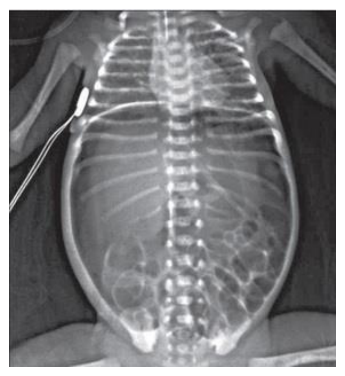
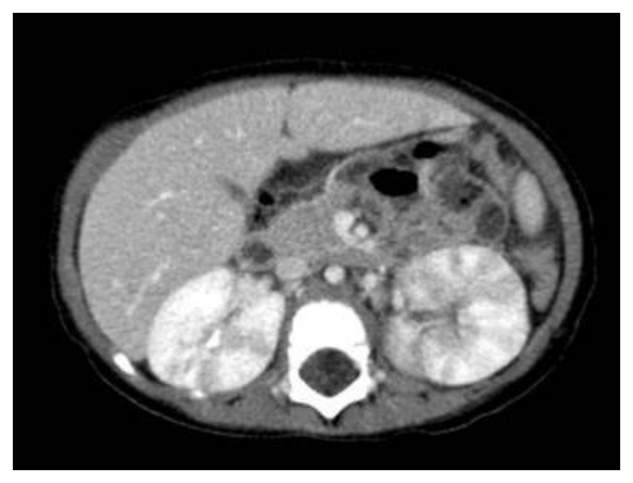
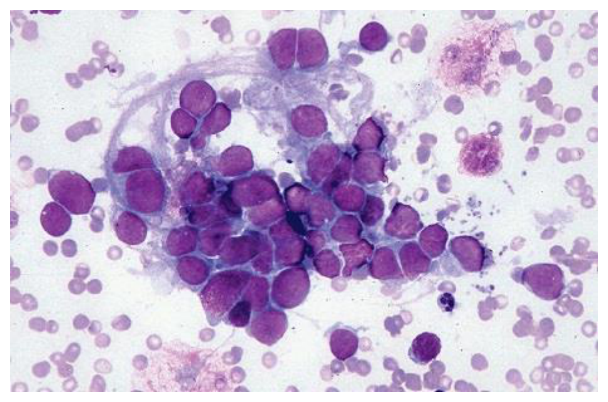
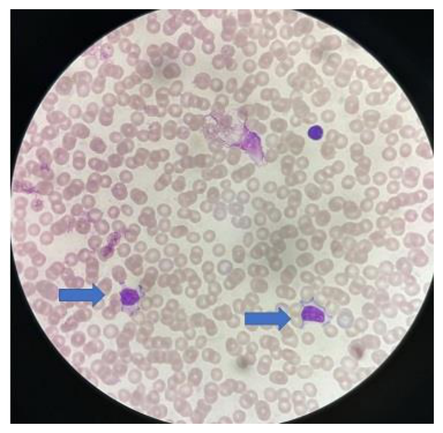
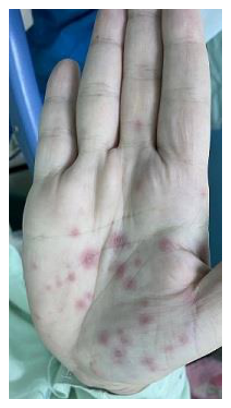
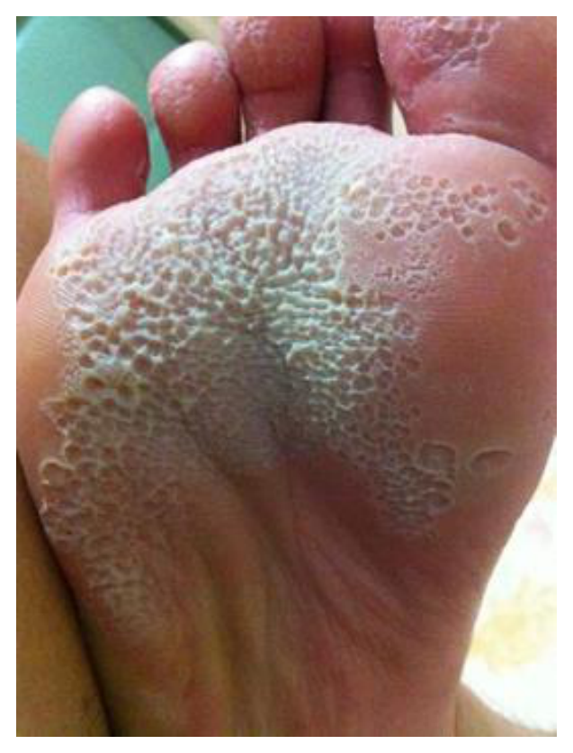
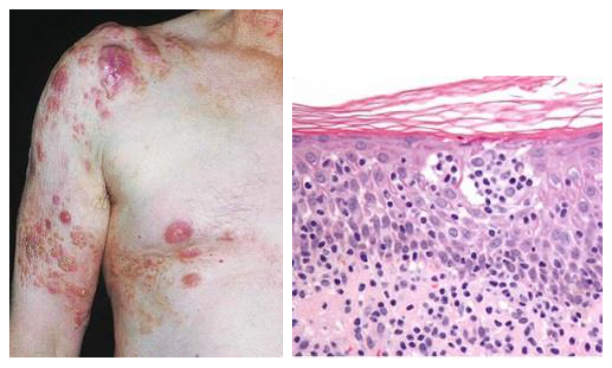
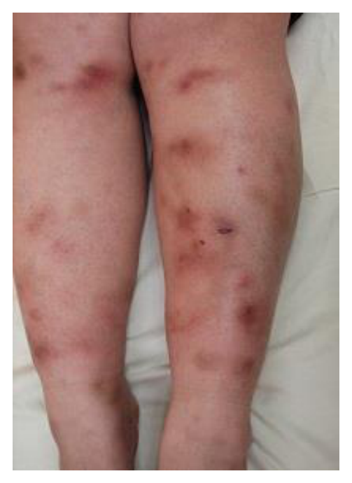
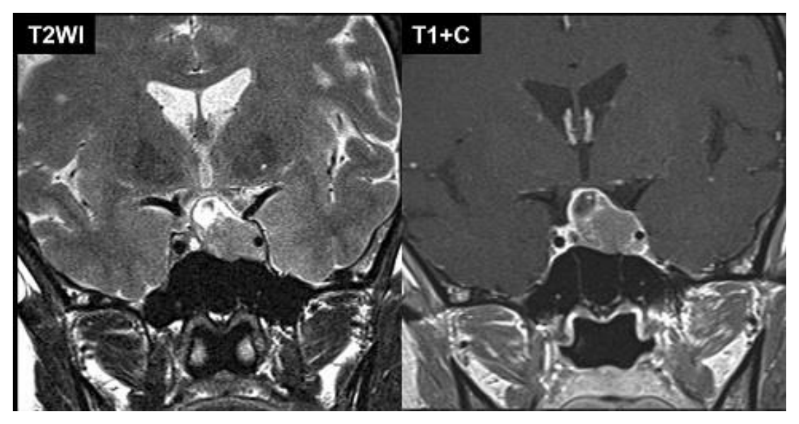
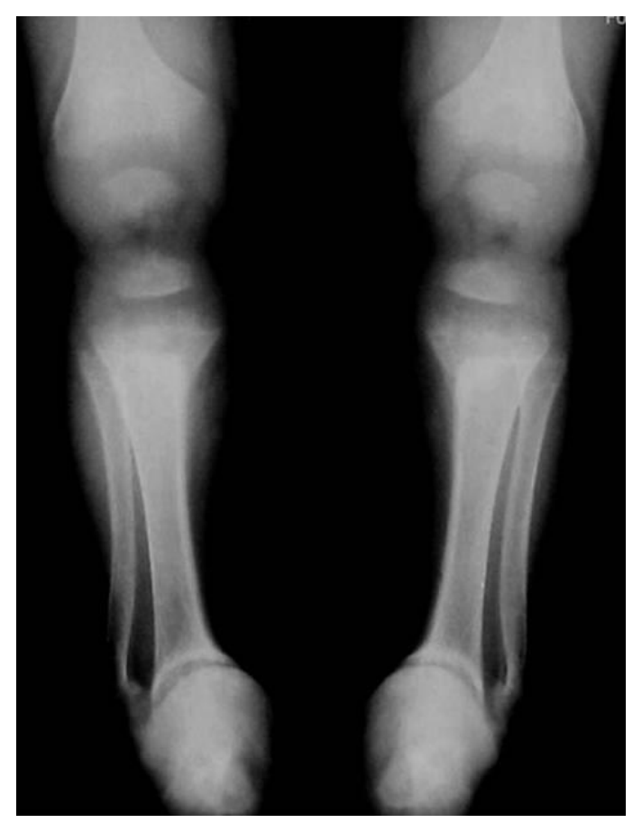

開卷有益 ／
醫師 ／ 醫學（四）（包括小兒科、皮膚科、神經科、精神科等科目及其相關臨床實例與醫學倫理） ／ 114 年第 1 次114 年第 1 次醫師醫學（四）（包括小兒科、皮膚科、神經科、精神科等科目及其相關臨床實例與醫學倫理）試題與答案
這一頁是民國 114 年第 1 次醫師醫學（四）（包括小兒科、皮膚科、神經科、精神科等科目及其相關臨床實例與醫學倫理）的整份歷屆試題，共 80 題，題目與標準答案出自考選部「國家考試試題及測驗式試題答案」開放資料，其中 80 題附有詳解。以下逐題列出題幹、選項與答案；要計時作答或記錄成績，請用線上練習。
考選部原始場次代碼：114020
線上作答這一科 →
全部 80 題
第 1 題
下列有關自費疫苗接種建議之敘述，何者最不適當？
（A） 肺炎鏈球菌疫苗有結合型以及多醣體疫苗兩種，其中結合型疫苗不適用於 2 歲以下幼兒（B） 幼童常規接種的百日咳抗體只能維持 5～10 年，建議青少年自費接種一劑減量破傷風白喉非細胞性百日咳混合疫苗（Tdap）（C） 曾施打過水痘疫苗者仍可能罹患水痘，稱為突破性感染。建議未得過水痘的幼童在 4～6 歲自費接種第二劑水痘疫苗（D） 針對欲前往麻疹流行地區之 6 個月以上未滿 1 歲嬰兒，建議可先自費接種一劑麻疹腮腺炎德國麻疹混合疫苗（MMR 疫苗）答案：（A）
詳解與考點 正解：「最不適當」。肺炎鏈球菌結合型疫苗可用於嬰幼兒，並非不適用於 2 歲以下；相反地，2 歲以下幼兒對多醣體抗原反應較差，故選 A。疫苗建議與公費範圍具時效性，本題依疫苗種類的基本免疫學判讀。
B：百日咳保護力會隨時間下降，青少年補接種 Tdap 是合理的加強免疫方向。
C：接種過水痘疫苗仍可能發生突破性感染；未曾罹患水痘的幼童補足第二劑可提升保護力，敘述適當。
D：前往麻疹流行地區的 6 個月以上未滿 1 歲嬰兒可考慮提早接種一劑 MMR 作旅遊前保護；這一劑不等同常規系列的完成。
本題考點：pneumococcal conjugate vaccine；polysaccharide vaccine；MMR 與旅遊前加速免疫。
第 2 題
下列有關母乳哺餵之敘述，何者最不適當？
（A） 母乳哺育可以減少寶寶過敏性疾病以及成人期心血管疾病的發生率（B） 哺餵母乳的媽媽罹患乳癌及卵巢癌的機率較低（C） 喝母乳的寶寶黃疸可能持續到 6 個月才完全消退（D） 喝母乳的寶寶在頭幾個月的大便通常是稀稀水水的，甚至一吃就解，這是正常現象答案：（C）
詳解與考點 正解：母乳性黃疸可使黃疸較久，但健康足月嬰兒不應把黃疸持續到 6 個月視為一般正常現象；持續黃疸須評估膽汁鬱積、溶血、內分泌或其他病因，故選 C。
A：母乳哺育與嬰兒期及長期健康益處相關，包含較低的部分過敏性疾病與心血管代謝風險，敘述方向適當。
B：哺乳與母親罹患乳癌及卵巢癌風險較低相關，為母乳哺育的已知母體益處之一。
D：母乳嬰兒早期糞便常較稀、排便頻繁，只要生長與整體狀況良好，可屬正常表現。
本題考點：breast milk jaundice；prolonged jaundice；breastfeeding 的母嬰健康效益。
第 3 題
27 週出生的早產兒，開始餵食 12 天後，突然發生嗜睡、腹脹、含膽汁嘔吐、糞便帶血絲等症狀。其腹部 X 光檢查如下圖。發生此狀況時，下列何種處置最不適當？

（A） 給與廣效抗生素（B） 增加靜脈輸液給與量（C） 會診小兒外科考慮手術（D） 安排上消化道攝影檢查答案：（D）
詳解與考點 正解：27 週早產兒開始餵食後出現嗜睡、腹脹、膽汁性嘔吐與血便，腹部 X 光可見腸壁內多發囊泡狀透亮影，為腸壁積氣（pneumatosis intestinalis），高度符合壞死性腸炎（necrotizing enterocolitis, NEC）。初始處置應禁食、胃腸減壓、靜脈輸液與廣效抗生素，並密切監測是否穿孔或腹膜炎；上消化道攝影無助於 NEC 的急性處置，且口服顯影劑可能增加腸道負荷，故選 D。
A：廣效抗生素用以涵蓋 NEC 相關的腸道細菌感染與菌血症風險，是標準初始治療之一，並非最不適當。
B：此患兒可能因敗血症、第三間隙液體流失及腸道發炎而循環灌流不足；增加靜脈輸液並依生命徵象與尿量調整，可維持血流動力穩定，屬適當處置。
C：NEC 若出現腸穿孔、氣腹、腹膜炎或臨床惡化，可能需要手術介入；及早會診小兒外科以評估手術時機是適當作法。
本題考點：壞死性腸炎（necrotizing enterocolitis, NEC）常見於早產兒，表現為腹脹、膽汁性嘔吐與血便；腸壁積氣（pneumatosis intestinalis）是重要腹部 X 光徵象；治療重點為禁食、減壓、靜脈支持、抗生素及外科評估。
第 4 題
剛出生新生兒之血紅素（hemoglobin）為 9.7 g/dL，血球容積比（hematocrit）為 30%，平均紅血球體積（mean corpuscular volume, MCV）為 80 fL，由此檢驗值可推測此新生兒最有可能的診斷為何？
（A） 缺鐵性貧血（iron deficiency anemia）（B） β型地中海型貧血（β-thalassemia）（C） α型地中海型貧血（α-thalassemia）（D） 蠶豆症（glucose-6-phosphate dehydrogenase deficiency）答案：（C）
詳解與考點 正解：新生兒 Hb 9.7 g/dL、Hct 30% 已有貧血，MCV 80 fL 對新生兒而言偏小，提示先天性小球性貧血。α-thalassemia 可在胎兒與新生兒期表現，較符合本題，故選 C。
A：缺鐵性貧血可造成小球性貧血，但剛出生即明顯小球性貧血較不典型，應先考慮遺傳性血紅素病。
B：β-thalassemia 的臨床貧血通常在出生後胎兒血紅素逐漸下降時才較顯著，因出生期以 HbF 為主，與本題時機不符。
D：glucose-6-phosphate dehydrogenase deficiency 主要造成氧化壓力下的溶血，並非典型先天小球性貧血。
本題考點：α-thalassemia；neonatal microcytic anemia；HbF 與 β-thalassemia 的發病時機。
第 5 題
嬰兒出生後無法進食，持續使用靜脈營養（parenteral nutrition）。第 40 天後出現黃疸、糞便呈極淡黃色，實驗室檢查值：ALT（alanine aminotransferase）為 125 U/L，serum total bilirubin 為 12 mg/dL，conjugated bilirubin 為 5.6 mg/dL。下列何者最不可能是此嬰兒黃疸之原因？
（A） 新生兒膽道閉鎖（biliary atresia）（B） 新生兒肝炎症候群（neonatal hepatitis syndrome）（C） 靜脈營養導致之膽汁滯留（parenteral nutrition cholestasis）（D） 吉伯特氏症候群（Gilbert syndrome）答案：（D）
詳解與考點 正解：conjugated bilirubin 5.6 mg/dL 顯示直接型高膽紅素血症，合併淡色糞便與長期靜脈營養，應思考膽汁鬱積或膽道阻塞。Gilbert syndrome 是非結合型高膽紅素血症，無法解釋本題的直接型膽紅素上升與淡色糞便，最不可能，故選 D。
A：biliary atresia 可造成膽汁無法排出、淡色糞便及直接型黃疸，是重要鑑別診斷。
B：neonatal hepatitis syndrome 可造成肝細胞受損與膽汁鬱積，能解釋直接型黃疸與 ALT 上升。
C：長期 parenteral nutrition 是嬰兒膽汁鬱積的已知危險因子，與第 40 天後出現的病程相符。
本題考點：neonatal cholestasis；conjugated hyperbilirubinemia；parenteral nutrition cholestasis 與 Gilbert syndrome 的區分。
第 6 題
關於兒童心肌炎（myocarditis），下列敘述何者最不適當？
（A） 病毒感染是引起兒童心肌炎常見的病因（B） 有部分的心肌炎是屬於輕症（C） 聽診心音有摩擦音（friction rub），代表心包膜也受影響（D） 兒童心肌炎如果恢復後，大多數會留下嚴重後遺症答案：（D）
詳解與考點 正解：兒童心肌炎的預後差異很大，許多個案可完全或接近完全恢復；不能說恢復後大多數都留下嚴重後遺症，故選 D。
A：病毒感染是兒童心肌炎常見病因，敘述適當。
B：心肌炎可從輕微、短暫症狀到嚴重心衰竭不等，確有部分屬輕症。
C：若聽到 friction rub，表示可合併心包膜發炎或受累，符合心肌心包膜炎的概念。
本題考點：pediatric myocarditis；myopericarditis；心肌炎的異質性預後。
第 7 題
出生 2 天的女嬰發紺，被診斷為大血管轉位（d-transposition of the great arteries with intactventricular septum）。下列何者之處置最不適當？
（A） 若兩心房間交通受限，做心房造口術（atrial septostomy）（B） 靜脈注射前列腺素（prostaglandin E1, PGE 1）（C） 為避免造成肺部壓力上升，應儘量避免放置氣管內管（D） 儘快進行心臟矯正手術（arterial switch operation）答案：（C）
詳解與考點 正解：d-transposition of the great arteries 合併 intact ventricular septum 時，體循環與肺循環呈平行，必須維持或增加血液混合。呼吸衰竭時仍可依臨床需要插管通氣；不能為了避免肺部壓力上升而一概避免氣管內管，故選 C。
A：若心房間交通受限，balloon atrial septostomy 可增加心房層級混合、改善低血氧，是適當處置。
B：靜脈注射 PGE1 可維持動脈導管開放，增加混合與全身血流，是重要穩定措施。
D：arterial switch operation 是 d-TGA 的根治性矯正手術，應在適當時機儘快安排。
本題考點：d-transposition of the great arteries；parallel circulation；PGE1、atrial septostomy 與 arterial switch operation。
第 8 題
關於各種先天性心臟病引起心臟衰竭的臨床症狀表現時機，下列何者最為適當？
（A） 大型的心室中隔缺損（ventricular septal defect, VSD）通常出生一週之內就可能會有心臟衰竭的症狀表現（B） 大型的心房中隔缺損（atrial septal defect, ASD）通常在一歲之內就可能會有心臟衰竭的症狀表現（C） 左心發育不全症候群（hypoplastic left heart syndrome, HLHS）通常在胎兒時期就可能會發生心臟衰竭的症狀表現（D） 亞柏斯坦畸形（Ebstein anomaly）合併嚴重三尖瓣逆流通常在胎兒時期就可能會發生心臟衰竭的症狀表現答案：（D）
詳解與考點 正解：嚴重 Ebstein anomaly 伴三尖瓣逆流可在胎兒期即造成明顯容量負荷、心臟擴大與胎兒心衰竭，故選 D。
A：大型 VSD 的左向右分流通常在出生後肺血管阻力下降的數週後才明顯，並非多在出生一週內發生心衰竭。
B：大型 ASD 的分流在嬰幼兒期通常不會很快造成心衰竭，症狀常較晚出現。
C：HLHS 在胎兒期可因胎盤循環代償而相對穩定，出生後動脈導管關閉才容易急遽失代償；它看似嚴重先天病而易被選，但典型危機不在胎兒期。
本題考點：congenital heart disease；fetal heart failure；Ebstein anomaly 與出生後肺血管阻力變化。
第 9 題
關於肝炎病毒潛伏期（incubation periods），下列敘述何者最適當？
（A） A 型肝炎病毒的潛伏期約為 15～19 天（B） B 型肝炎病毒的潛伏期約為 30 天（C） C 型肝炎病毒的潛伏期約為 7 天（D） E 型肝炎病毒的潛伏期約為 90 天答案：（A）
詳解與考點 正解：A 型肝炎病毒的潛伏期約 15～50 天，平均約 28 天；「約 15～19 天」不是其典型潛伏期的完整表述。官方答案為 A；惟若選項文字確為 15～19 天，則此題以過窄區間概括潛伏期，存在題目文字爭議。
B：B 型肝炎病毒的潛伏期通常較長，常以數週至數月計，約 30 天過短。
C：C 型肝炎病毒潛伏期通常為數週，7 天過短。
D：E 型肝炎病毒潛伏期多為數週而非約 90 天；不同病毒潛伏期範圍有重疊，仍要以典型長短作鑑別。
本題考點：hepatitis A virus 的 incubation period 約 15～50 天、平均約 28 天；hepatitis B virus、hepatitis C virus 與 hepatitis E virus 的典型潛伏期較長。
第 10 題
足月新生男嬰，出生體重 3 公斤，全母乳哺餵，出生後 6 小時開始出現黃疸。身體診察顯示鞏膜與皮膚黃疸。下列何項檢驗結果最可以支持男嬰的黃疸是溶血造成的？
（A） 直接型膽紅素（direct bilirubin）濃度上升（B） 直接庫氏試驗（direct Coombs test）陰性（C） 周邊血液抹片可見紅血球碎片（fragmented red blood cells）（D） 紅血球容積比（hematocrit）55%答案：（C）
詳解與考點 正解：出生後 6 小時即出現黃疸提示病理性黃疸；若由溶血造成，紅血球會在周邊血液抹片留下破壞的證據。紅血球碎片（schistocytes）代表紅血球在循環中受機械性破壞，支持溶血及隨之而來的非結合型高膽紅素血症，故選 C。
A：直接型膽紅素上升指向膽汁鬱積或肝膽排泄異常；溶血增加的是未結合膽紅素，故不支持本題的機轉。
B：直接庫氏試驗陰性只能使抗體媒介溶血較不可能，不能作為支持溶血的證據；而且非免疫性溶血本可為陰性。
D：新生兒紅血球容積比 55% 本身可在正常範圍，不能證實紅血球正在被破壞。
本題考點：新生兒早發性黃疸（early neonatal jaundice）應優先評估溶血；周邊血液抹片（peripheral blood smear）的紅血球碎片支持血管內或機械性溶血；直接庫氏試驗（direct Coombs test）主要辨識免疫性溶血。
第 11 題
3 歲男童無特殊病史，因高燒、倦怠（malaise）、陣發性腹痛、頻繁水瀉 2 天被送到急診。男童無嘔吐，無服用抗生素。身體診察顯示體溫 40.2℃、口腔黏膜乾、心搏快、腹部軟、沒有壓痛（tenderness）或反彈痛（rebound tenderness）。觸診時，男童突然腹絞痛，接著排出含有血絲黏糊便。下列何者是最可能的致病菌？
（A） 輪狀病毒（Rotavirus）（B） 諾羅病毒（Norovirus）（C） 志賀氏桿菌（Shigella）（D） 梭狀困難桿菌（Clostridium difficile）答案：（C）
詳解與考點 正解：高燒、陣發性腹絞痛與帶血絲黏液便是侵襲性細菌性腸炎的關鍵；志賀氏桿菌侵入結腸黏膜，可造成發燒、腹部絞痛、裡急後重及黏液血便，最符合本例，故選 C。
A、B：輪狀病毒與諾羅病毒都常造成急性水樣腹瀉及嘔吐，雖可脫水，但不典型造成高熱合併黏液血便；血便正是它們看似常見腸胃炎、卻不符本題的關鍵。
D：梭狀困難桿菌腸炎多與近期抗生素使用或醫療照護暴露相關；本例明示未使用抗生素，且臨床型態更符合志賀氏桿菌。
本題考點：志賀氏桿菌腸炎（shigellosis）為侵襲性細菌性腹瀉，典型為發燒、腹絞痛與黏液血便；病毒性腸胃炎（viral gastroenteritis）則較常為水樣腹瀉與嘔吐。
第 12 題
關於自體顯性多囊腎（autosomal dominant polycystic kidney disease, ADPKD）及自體隱性多囊腎（autosomal recessive polycystic kidney disease, ARPKD），下列敘述何者最不適當？
（A） ADPKD 之囊泡表現可見於肝臟、脾臟、胰臟與女性卵巢（B） ARPKD 較常出現在新生兒時期，可能伴隨有羊水過少、肺部發育不全等表現（C） 兩者皆可能出現血尿、高血壓、腎衰竭等併發症（D） 大部分 ADPKD 的基因缺陷發生在第 6 對染色體答案：（D）
詳解與考點 正解：本題問最不適當，關鍵在 ADPKD 的致病基因位置。ADPKD 最常見為 PKD1 基因變異，位於第 16 對染色體；另一較少見基因為 PKD2，位於第 4 對染色體，因此稱大部分缺陷發生於第 6 對染色體錯誤，故選 D。
A：ADPKD 可有腎外囊腫表現，尤其肝臟，也可見其他器官囊腫，敘述方向適當。
B：ARPKD 常在胎兒期或新生兒期嚴重發病；嚴重腎臟病變可致羊水過少及肺發育不全，敘述適當。
C：兩型多囊腎在病程中都可能出現血尿、高血壓與腎功能惡化，差別主要在遺傳型式、發病年齡及腎外表現，故此敘述適當。
本題考點：自體顯性多囊腎（ADPKD）常與 PKD1、PKD2 基因相關；自體隱性多囊腎（ARPKD）常於新生兒期表現，並可伴隨羊水過少與肺發育不全。
第 13 題
關於急性鏈球菌感染後腎炎（acute poststreptococcal glomerulonephritis）的描述，下列何者最為適當？
（A） 最常發生於 3 歲以下的孩童（B） 最常見表現為咽喉感染後 1 至 3 天內發生巨視性血尿（C） 於 90%的病童其血液中 C3 與 C4 數值同時明顯下降（D） 早期使用抗生素治療鏈球菌並無法減少腎炎的發生答案：（D）
詳解與考點 正解：急性鏈球菌感染後腎炎是感染後的免疫複合體疾病，不是持續存在的細菌直接侵襲；早期以抗生素治療鏈球菌感染可防止傳播及其他併發症，但不能可靠地消除已被觸發的腎炎風險，故 D 最適當。
A：此病好發於學齡兒童，並非最常見於 3 歲以下。
B：腎炎通常在鏈球菌咽喉感染後有一段潛伏期才出現，並非 1 至 3 天內立刻發生巨視性血尿。
C：典型補體變化是 C3 下降，而 C4 常維持正常；將兩者都明顯下降並稱為多數病童表現不正確。
本題考點：急性鏈球菌感染後腎炎（acute poststreptococcal glomerulonephritis）屬感染後免疫複合體腎炎；補體型態常為 C3 降低、C4 相對保留；感染治療與預防腎炎須加以區分。
第 14 題
5 歲女童高燒 3 日及膿尿（pyuria ; WBC 100～150/HPF），住院接受抗生素治療。經投與經驗性抗生素治療3 日後，高燒並沒有改善。腹部電腦斷層（有注射顯影劑）檢查顯示如圖，女童最可能的診斷為：

（A） 急性腎絲球腎炎（acute glomerulonephritis）（B） 急性大葉性腎盂腎炎（acute lobar nephronia）（C） 急性腎膿瘍（acute renal abscess）（D） 急性腎梗塞（acute renal infarction）答案：（B）
詳解與考點 正解：女童有持續高燒、明顯膿尿，且經抗生素治療後仍未改善；顯影腹部電腦斷層可見雙腎實質呈多發、界限不清的楔形或片狀低增強區，腎臟輪廓尚未形成單一明確膿腔，符合急性大葉性腎盂腎炎（acute lobar nephronia）。此病是急性腎盂腎炎與腎膿瘍間的局部細菌性腎實質感染，常使發燒較持久，故選 B。
A：急性腎絲球腎炎主要表現為血尿、蛋白尿、水腫與高血壓，尿沈渣可見紅血球或紅血球圓柱；本題是明顯膿尿與持續高燒，且圖中為局部腎實質增強不均，並不符合腎絲球性病變。
C：急性腎膿瘍也會造成持續發燒，容易是誘答；但影像通常可見邊界較清楚的圓形或橢圓形液化膿腔，常伴環狀增強。本圖所見為未液化成腔的片狀腎實質病灶，較符合（B）急性大葉性腎盂腎炎。
D：急性腎梗塞可見楔形低增強區，但常與血管栓塞或高凝狀態相關，臨床較常有突發腰痛、血尿或腎功能變化；本題的膿尿與感染性高燒支持細菌性腎實質感染，而非缺血性梗塞。
本題考點：急性大葉性腎盂腎炎（acute lobar nephronia）是局部、未液化的細菌性腎實質感染；顯影 CT 常呈楔形或片狀低增強，須與有明確液化膿腔及環狀增強的腎膿瘍（renal abscess）區分。
第 15 題
關於過敏性紫斑症（Henoch-Schönlein purpura），下列敘述何者最為適當？
（A） 紫斑（purpura）主要出現在上肢及軀幹（B） 抽血大部分會發現血小板低下（C） 病理表現為血管炎（vasculitis）與 IgA 沉積在小血管（D） 大部分病患會造成腎臟發炎，應儘快給與類固醇治療答案：（C）
詳解與考點 正解：過敏性紫斑症的核心病理是 IgA 相關小血管炎。皮膚、腸胃道及腎臟的小血管可見白血球碎裂性血管炎及 IgA 沉積，正可解釋可觸及紫斑、腹痛與腎炎風險，故選 C。
A：紫斑典型分布在下肢與臀部等依賴部位，而非以上肢及軀幹為主。
B：本病是血管炎而非血小板減少性紫斑；血小板多為正常或升高，這正是其外觀似出血點卻不由血小板低下造成的鑑別。
D：並非大多數病患都發生腎炎；類固醇可用於特定嚴重症狀，但不能因預防腎炎而一律盡快給予。
本題考點：IgA 血管炎（IgA vasculitis/Henoch-Schönlein purpura）為小血管炎合併 IgA 沉積；典型表現包括下肢或臀部可觸及紫斑、腹痛、關節症狀與腎臟受累。
第 16 題
有關兒童特發性關節炎（juvenile idiopathic arthritis），下列敘述何者最不適當？
（A） 是指 16 歲以下至少關節腫痛 6 週以上（B） 是兒童最常見的慢性風濕性疾病（C） 要長期追蹤注意是否合併虹彩炎（anterior uveitis）（D） 生物製劑（如 Omalizumab）可用於治療嚴重者答案：（D）
詳解與考點 正解：本題問最不適當。Omalizumab 是抗 IgE 單株抗體，主要用於特定過敏性疾病與慢性蕁麻疹，並非兒童特發性關節炎的標準生物製劑；JIA 的生物製劑是依病型考量 TNF、IL-1、IL-6 等路徑，故選 D。
A：JIA 的定義包含 16 歲以前起病、關節炎持續至少 6 週，且需排除其他原因，敘述適當。
B：JIA 是兒童最常見的慢性風濕性疾病，敘述適當。
C：JIA 可併發慢性前葡萄膜炎，部分兒童眼部症狀不明顯，故需長期眼科追蹤，敘述適當。
本題考點：兒童特發性關節炎（juvenile idiopathic arthritis, JIA）的定義為 16 歲前起病且關節炎持續至少 6 週；前葡萄膜炎（anterior uveitis）需規律篩檢；生物製劑（biologic agents）須依發炎路徑選擇。
第 17 題
有關慢性蕁麻疹，下列敘述何者最適當？
（A） 是指病程反覆發作 14 天以上（B） 可能是自體免疫疾病，如：thyroid disease 的先期表現（C） 血清過敏原（specific IgE）檢驗為常規檢測項目（D） 用第 2 代抗組織胺治療，即使效果不好也不宜增加劑量答案：（B）
詳解與考點 正解：慢性蕁麻疹可與自體免疫狀態相關，甲狀腺自體免疫疾病是常見需考量的共病之一，故 B 最適當。這不表示每位病人都有甲狀腺疾病，而是病史與臨床線索適合時應評估相關自體免疫性。
A：慢性蕁麻疹通常以反覆風疹塊持續或反覆超過 6 週界定，14 天不足以定義慢性。
C：慢性蕁麻疹多非由單一外來過敏原驅動；無指向性病史時，specific IgE 並非例行檢驗。
D：第 2 代抗組織胺是第一線治療；控制不佳時可在醫師評估下調整劑量，並非一概不得增加。
本題考點：慢性蕁麻疹（chronic urticaria）以病程超過 6 週為界；第 2 代 H1 抗組織胺（second-generation H1 antihistamines）為第一線；自體免疫（autoimmunity）是重要相關機轉。
第 18 題
關於剛出生健康足月新生兒的血液學變化，下列敘述何者最適當？
（A） 與學齡兒童相比，紅血球體積較小，血紅素較低，此乃生理性貧血（B） 除了第八因子濃度比較接近成人的濃度，其餘的凝血因子濃度都較成人低（C） 蛋白 C 與蛋白 S 數值較學齡兒童高（D） 血小板功能較學齡兒童佳答案：（B）
詳解與考點 正解：健康足月新生兒的止血系統尚在成熟，維生素 K 依賴因子及部分接觸因子常低於成人；第 VIII 因子相對接近成人。官方答案為 B；惟 fibrinogen、factor V、factor XIII 也可接近成人範圍，且 vWF 與 factor VIII 可正常或偏高，因此「其餘凝血因子都較成人低」並不嚴謹。
A：新生兒出生時的紅血球體積與血紅素通常較學齡兒童高，之後才會出現生理性貧血，故敘述方向相反。
C：蛋白 C 與蛋白 S 屬天然抗凝蛋白，在新生兒通常較低而非較高。
D：新生兒血小板數目雖可正常，但功能成熟度較低，不能說較學齡兒童佳。
本題考點：新生兒止血系統（developmental hemostasis）具有凝血因子與天然抗凝蛋白較低的生理特徵；factor VIII 相對接近成人；生理性貧血（physiologic anemia）發生於出生後而非出生當下。
第 19 題
關於兒童癌症，下列敘述何者最不適當？
（A） 兒童癌症僅有少數（8～10%）為偶發，大部分（90%以上）都與先天性的遺傳疾病有關（B） 白血病是臺灣及美國最常見的兒童癌症類別（C） 在全面接種 B 型肝炎疫苗的國家，可觀察到兒童肝細胞癌（hepatocellular carcinoma）的發生率明顯下降（D） 較可能發生在青少年時期的癌症，有骨癌、何杰金淋巴瘤、性腺癌（卵巢或睪丸癌）及上皮癌等答案：（A）
詳解與考點 正解：本題問最不適當。兒童癌症大多是散發性，僅少數與已知遺傳性癌症症候群或先天疾病相關；將比例完全倒置，說大部分都與先天遺傳疾病有關，明顯錯誤，故選 A。
B：白血病確為臺灣及美國最常見的兒童癌症類別，敘述適當。
C：B 型肝炎疫苗可降低慢性 HBV 感染，因此在全面接種地區可降低兒童肝細胞癌發生，敘述適當。
D：骨癌、何杰金淋巴瘤、性腺腫瘤及部分上皮性癌症相較於幼兒癌症更常在青少年時期出現，敘述適當。
本題考點：兒童癌症（childhood cancer）多為散發性而非遺傳症候群所致；白血病（leukemia）是最常見類別；B 型肝炎疫苗（hepatitis B vaccine）具有降低兒童肝細胞癌風險的族群效益。
第 20 題
3 歲男童因發燒 1 週合併輕度貧血，做骨髓抽吸抹片檢查時發現多處細胞叢集（clumps）形成薔薇狀構造（rosette formation），並圍繞著一些纖維狀物質。下列何者為最有可能的診斷？

（A） 神經母細胞瘤（neuroblastoma）（B） 急性淋巴性白血病（acute lymphoblastic leukemia）（C） 感染性單核球增多症（infectious mononucleosis）（D） 高雪氏症（Gaucher disease）答案：（A）
詳解與考點 正解：3 歲幼兒有發燒與輕度貧血，骨髓抹片可見小型圓形腫瘤細胞成群聚集，細胞核深染，並以細胞排列圍繞中央纖維狀物質形成薔薇狀構造。圖中所示為神經纖維性間質周圍的 Homer Wright rosettes，代表神經母細胞瘤（neuroblastoma）的神經分化特徵；神經母細胞瘤可侵犯骨髓而造成貧血，故選 A。
B：急性淋巴性白血病的骨髓主要見淋巴母細胞（lymphoblasts）大量增生，細胞多為分散或瀰漫分布，不會形成圍繞神經纖維性物質的 Homer Wright rosettes。幼兒發燒與貧血雖可見於急性淋巴性白血病，但無法解釋圖中的薔薇狀構造。
C：感染性單核球增多症以周邊血出現反應性異型淋巴球為主要血液學表現，並非骨髓中小圓細胞群形成薔薇狀構造；且此病在 3 歲幼兒常較不具典型表現，不能解釋骨髓圖像。
D：高雪氏症的骨髓可見高雪細胞（Gaucher cells），為體積很大的泡沫樣巨噬細胞，胞質有皺紙樣（crumpled tissue paper）外觀；圖中則是深染小細胞聚集並形成薔薇狀構造，形態不同。
本題考點：神經母細胞瘤（neuroblastoma）是兒童常見的交感神經系統胚胎性腫瘤，可轉移至骨髓造成貧血；Homer Wright rosette 指腫瘤細胞圍繞神經纖維性物質（neuropil）的薔薇狀排列，是神經母細胞瘤出現神經分化的形態線索；須與急性淋巴性白血病的淋巴母細胞增生及高雪氏症的皺紙樣巨噬細胞區分。
第 21 題
關於小兒敗血症與敗血性休克的敘述，下列何者最適當？
（A） 敗血症會造成單一身體器官失能，導致死亡（B） 敗血症是一種感染過程中，造成兒童局部性發炎反應的現象（C） 兒童敗血症之早期症狀通常為低血壓（D） 敗血性休克造成血行動力學不穩定或呼吸窘迫時，需要考慮插管治療答案：（D）
詳解與考點 正解：敗血性休克出現血行動力學不穩定或呼吸窘迫時，呼吸衰竭與耗竭風險高，應及早考慮插管與呼吸支持，故選 D。插管是整體復甦的一環，須同時處理感染源、循環與氧合。
A：敗血症可造成一個以上器官功能障礙；將其限縮為單一器官失能不正確。
B：敗血症是感染引起失調的全身性宿主反應與器官功能障礙，並非單純局部發炎。
C：兒童可藉由心搏加快與血管收縮維持血壓，低血壓常是晚期徵象；把低血壓當作通常的早期症狀會延誤辨識。
本題考點：兒童敗血症（pediatric sepsis）是感染相關的器官功能障礙；敗血性休克（septic shock）需同時評估循環與呼吸；兒童低血壓（hypotension）常屬較晚期危險徵象。
第 22 題
對於兒童氣胸發生後的治療方針，下列敘述何者最適當？
（A） 輕至中度的氣胸，有機會在 1 個星期內自己改善（B） 第一次發作的氣胸，其程度小於 5%的病童，需要胸管引流治療（C） 氣胸第一次發作，應使用化學性肋膜黏連術（chemical pleurodesis）治療（D） 氣胸發作次數與外科內視鏡手術治療時機無關答案：（A）
詳解與考點 正解：兒童首次輕至中度、臨床穩定的氣胸可採觀察與支持性治療，空氣能逐步被吸收，約 1 週內有機會改善，故 A 最適當。實際是否觀察仍要依症狀、氧合、氣胸大小與惡化情形判定。
B：是否需胸管引流不是由「小於 5%」這種單一比例決定；較大的氣胸、明顯症狀或生理不穩定才是重要判斷。
C：首次發作通常不會例行施行化學性肋膜黏連術；此侵入性預防策略較可能在反覆發作或特定情況才考慮。
D：反覆氣胸會影響外科胸腔鏡手術的評估時機，故不能說發作次數無關。
本題考點：自發性氣胸（spontaneous pneumothorax）處置取決於穩定度、症狀與大小；胸管引流（tube thoracostomy）適用於較嚴重或不穩定情況；肋膜黏連術（pleurodesis）不是首次發作的常規處置。
第 23 題
2 歲女童，發燒、持續昏睡、呼吸喘及有肌躍型抽搐，身體診察有口腔潰瘍，手部、足部與臀部出現紅色丘疹及水泡。關於此病症的敘述，下列何者最不適當？
（A） 肌躍型抽搐為類似受到驚嚇的動作，可能是腸病毒重症之前兆（B） 可能是腸病毒 71 型感染併發重症合併腦幹腦炎，須進行腦脊髓液檢查（C） 為維持該童之基本血壓，應快速給與大量靜脈輸液（D） 若因心臟衰竭有休克症狀、血壓下降之情形，升壓藥物應優先使用 milrinone答案：（C）
詳解與考點 正解：本題問最不適當。手足口病合併持續昏睡、呼吸喘與肌躍型抽搐應警覺腸病毒重症與自律神經失調；此時若快速大量灌注靜脈輸液，可能加重肺水腫及心肺衰竭，故 C 不適當。此為高危急救情境，液體復甦需依循環與心肺狀態審慎調整。
A：肌躍型抽搐可呈現類受驚嚇動作，是腸病毒重症的警訊之一，敘述適當。
B：腸病毒 71 型可造成腦幹腦炎等神經併發症；在此神經症狀下評估腦脊髓液具有合理性。
D：腸病毒 71 型重症進入心臟衰竭合併休克、血壓下降的階段時，milrinone 可列為優先的強心藥物；它兼具正性肌力與血管擴張作用，並非典型的純升壓劑，仍須依血行動力學決定是否合併其他藥物。
本題考點：腸病毒重症（severe enterovirus infection）可有腦幹腦炎（brainstem encephalitis）與自律神經失調；肌躍型抽搐（myoclonic jerks）是警訊；心肺衰竭風險下的輸液治療（fluid therapy）須避免過度。
第 24 題
足月新生兒，出生體重 4250 公克。因為呼吸喘，入住新生兒病房。母親懷孕時有妊娠糖尿病，僅以飲食控制。出生 4 小時後，因為活動力不佳，檢查發現低血糖（血糖：39 mg/dL）。下列何種處置最不適當？
（A） 立即靜脈給與 2 c.c./kg 的葡萄糖水（10%），等到血糖＞70 mg/dL，再抽血檢查低血糖的原因（B） 需注意是否同時有低血鈣（hypocalcemia）、低血鎂（hypomagnesemia）的情形（C） 考慮安排心臟超音波，檢查是否有心臟構造的問題（D） 因出生體重過重，要注意是否有產傷（birth trauma）答案：（A）
詳解與考點 正解：本題問最不適當。糖尿病母親所生巨嬰合併症狀性低血糖，確需立即矯正血糖；但低血糖評估的重要原則是在可行且不延誤治療下，於矯正前取得關鍵檢體。選項 A 主張等血糖大於 70 mg/dL 才抽血查原因，會錯過低血糖當下最具診斷價值的資料，故不適當。
B：糖尿病母親所生新生兒可合併低血鈣與低血鎂，需一併留意，敘述適當。
C：此類新生兒有較高心臟結構或心肌肥厚相關問題風險；呼吸喘時安排心臟超音波評估合理。
D：出生體重過重會增加難產與產傷風險，須檢查是否有相關傷害，敘述適當。
本題考點：糖尿病母親嬰兒（infant of diabetic mother）常見低血糖（neonatal hypoglycemia）與代謝、心臟相關併發症；症狀性低血糖須優先治療；關鍵檢體（critical sample）應在可行時於低血糖當下取得。
第 25 題
14 歲女孩有無痛性的雙側甲狀腺腫大，合併心悸、體重減輕、月經不規則。實驗室檢查顯示，free T4 3.6ng/dL（參考值 0.79～1.89）、TSH＜0.03 mIU/L（參考值 0.5～5.5）。下列何者是最可能的診斷？
（A） 葛雷夫氏病（Graves disease）（B） 橋本氏病（Hashimoto disease）（C） 乳突狀甲狀腺癌（papillary thyroid cancer）（D） 亞急性甲狀腺炎（subacute thyroiditis）答案：（A）
詳解與考點 正解：無痛性雙側甲狀腺腫大合併心悸、體重減輕、月經不規則，且 free T4 3.6 ng/dL 高於參考上限、TSH 被抑制，顯示原發性甲狀腺機能亢進。青少女最典型的病因是 Graves disease，故選 A。
B：橋本氏病多造成慢性自體免疫性甲狀腺炎與甲狀腺功能低下；雖偶可有短暫亢進期，但不是本例最可能診斷。
C：乳突狀甲狀腺癌常以結節或頸部淋巴結病灶表現，通常不會造成此種瀰漫性甲狀腺機能亢進。
D：亞急性甲狀腺炎常有頸部疼痛、壓痛及發炎病程，本例無痛性瀰漫腫大較不符合。
本題考點：葛雷夫氏病（Graves disease）是兒童與青少年常見的自體免疫性甲狀腺機能亢進；原發性甲狀腺機能亢進（primary hyperthyroidism）呈現 free T4 上升與 TSH 抑制。
第 26 題
2 歲男童發燒 5 天伴隨全身性瘀點（petechiae）而住院，同時有鼻塞及雙眼眼皮浮腫。身體診察發現頸部淋巴結腫大、扁桃腺有滲出物。抽血檢查：Hb 10 g/dL、WBC 18800/μL、atypical lymphocyte 16%、platelet 20000/μL，GOT 194 IU/L、GPT 109 IU/L、CRP 0.5 mg/dL，EB VCA IgM＞160.0 U/mL；血液塗片染色如圖所示。有關此疾病的敘述，下列何者最不適當？

（A） 最有可能為 Epstein-Barr virus 感染（B） 圖中血液塗片中箭頭所指為非典型淋巴球（atypical lymphocyte）（C） 因為血小板低下症狀嚴重，應儘快使用抗病毒藥物治療（D） 短期皮質類固醇治療，可能有助於此病症的特定併發症答案：（C）
詳解與考點 正解：本題最不適當的是 C。發燒、滲出性扁桃腺炎、頸部淋巴結腫大、眼瞼浮腫、異型淋巴球增多、輕度肝炎及 EBV VCA IgM 陽性，符合傳染性單核球增多症。血小板 20000/μL 為嚴重血小板低下，須評估出血並依嚴重度處置，但抗病毒藥物無法作為改善 EBV 傳染性單核球增多症或其血小板低下的常規治療，故選 C。
A：Epstein-Barr virus 感染可造成傳染性單核球增多症，其典型表現包括發燒、咽喉炎、淋巴結腫大與異型淋巴球；本題 EBV VCA IgM 顯著陽性，支持急性感染，故此敘述適當。
B：圖中箭頭所指細胞可見較大的淋巴球、豐富且深藍紫色的細胞質，並呈不規則外緣，符合反應性非典型淋巴球的形態；這是 EBV 感染時由 T 細胞反應所致的常見血液塗片表現，故此敘述適當。
D：短期皮質類固醇並非一般傳染性單核球增多症的常規治療，但可用於特定嚴重併發症，例如上呼吸道阻塞、嚴重血液學併發症或其他危及器官的免疫反應；因此此敘述並非最不適當。
本題考點：傳染性單核球增多症（infectious mononucleosis）常由 Epstein-Barr virus 引起，伴異型淋巴球（atypical lymphocyte）與肝功能異常；治療以支持性照護為主，皮質類固醇（corticosteroid）限特定嚴重併發症使用，抗病毒治療不是常規處置。
第 27 題
關於活性減毒疫苗，下列敘述何者最不適當？
（A） 麻疹、水痘疫苗和 B 型流行性腦脊髓炎疫苗都是活性減毒疫苗（B） 活性減毒疫苗往往會誘發長期免疫反應（C） 大多數活性減毒疫苗通常只需要接種 1 劑或 2 劑（D） MMR 活性減毒疫苗需重複接種的目的是誘導那些對第一劑沒有反應者的初始免疫反應（initial immuneresponse）答案：（A）
詳解與考點 正解：本題問最不適當。麻疹與水痘疫苗是活性減毒疫苗，但 B 型流行性腦脊髓炎疫苗為 meningococcal B vaccine，並非活性減毒疫苗，不能與前兩者一概列為活性減毒疫苗，故選 A。
B：活性減毒疫苗能模擬自然感染的免疫刺激，常可誘發較持久的免疫反應，敘述適當。
C：多數活性減毒疫苗以 1 劑或 2 劑即可建立所需免疫，敘述適當。
D：MMR 重複接種的重要目的之一是讓第一劑未產生免疫反應者獲得初次免疫，而不只是單純替所有人追加加強，敘述適當。
本題考點：活性減毒疫苗（live attenuated vaccine）可產生持久免疫；麻疹、水痘與 MMR 屬活性減毒疫苗；B 型流行性腦脊髓炎疫苗（meningococcal B vaccine）不是活性減毒疫苗。
第 28 題
關於麻疹腮腺炎德國麻疹混合疫苗（MMR 疫苗）接種及疑似麻疹個案接觸者暴露後預防建議措施的敘述，下列何者最不適當？
（A） 距最近一次暴露 72 小時內，滿 6 個月至未滿 1 歲嬰兒可由醫師評估後選擇接種 MMR 疫苗或肌肉注射麻疹免疫球蛋白（IMIG）（B） 注射麻疹免疫球蛋白（IMIG）後，為了提高保護效力，須於 2 週時再接種 MMR 疫苗（C） 未滿 1 歲嬰兒提前接種 MMR 疫苗進行暴露後預防時，仍須於滿 1 歲後，按時程重新完成 2 劑公費常規疫苗接種（D） 未滿 1 歲嬰兒之暴露後預防如接種 MMR 疫苗，後續接種常規 MMR 疫苗，應至少間隔 28 天答案：（B）
詳解與考點 正解：本題問最不適當。麻疹免疫球蛋白會干擾活性減毒 MMR 疫苗病毒的複製與免疫反應，因此注射 IMIG 後須至少間隔 6 個月才可再接種 MMR；於 2 週後接種會受被動抗體干擾，故選 B。
A：暴露後 72 小時內，符合年齡條件的嬰兒可由醫師依暴露與風險評估選擇 MMR 或 IMIG，敘述適當。
C：未滿 1 歲的提前 MMR 屬暴露後預防，不取代滿 1 歲後的常規 2 劑接種，敘述適當。
D：若暴露後採 MMR，後續活性疫苗接種需維持適當間隔；至少 28 天符合活性減毒疫苗間隔原則。
本題考點：麻疹暴露後預防（measles post-exposure prophylaxis）可用 MMR 或免疫球蛋白（immunoglobulin）；IMIG 後至少間隔 6 個月再接種 MMR；提前接種不取代常規 MMR 疫程。
第 29 題
有關腦性麻痺的敘述，下列何者最不適當？
（A） 造成早產兒的腦性麻痺主要的病灶是腦室旁白質軟化（B） 超過 7 成以上的腦性麻痺個案發生的原因與新生兒窒息有關（C） athetoid cerebral palsy 可能起因於核黃疸（kernicterus）的結果（D） 可能合併有癲癇、認知功能障礙或語言發展遲緩等問題答案：（B）
詳解與考點 正解：本題問最不適當。腦性麻痺是發育中腦部非進行性損傷造成的運動與姿勢障礙，病因多元；新生兒窒息僅占少數，不可能解釋超過 7 成病例，因此 B 錯誤，故選 B。
A：早產兒腦性麻痺常與腦室旁白質軟化（periventricular leukomalacia）相關，敘述適當。
C：athetoid cerebral palsy 可由核黃疸傷及基底核而發生，敘述適當。
D：腦性麻痺除運動障礙外，可合併癲癇、認知障礙與語言發展遲緩等問題，敘述適當。
本題考點：腦性麻痺（cerebral palsy）為非進行性腦部損傷後的運動障礙；早產兒常見腦室旁白質軟化（periventricular leukomalacia）；核黃疸（kernicterus）可導致不隨意動作型腦性麻痺。
第 30 題
關於兒童頭痛，下列那一項病史最不需要考慮進行神經影像學檢查？
（A） 頭痛合併有癲癇發作（B） 家族有偏頭痛病史（C） 咳嗽時頭痛會更加劇烈（D） 沒有外傷的情況下從來沒有經歷過如此劇烈之頭痛答案：（B）
詳解與考點 正解：本題問最不需要神經影像學檢查的病史。單純家族有偏頭痛病史支持原發性頭痛的可能，若病人神經學檢查正常且無警訊，通常不必因家族史本身安排影像，故選 B。
A：頭痛合併癲癇發作屬神經學警訊，須排除結構性病灶，應考慮影像。
C：咳嗽時頭痛加劇可能提示顱內壓變化或後顱窩病灶，是看似可歸為一般頭痛、但不能忽略的警訊。
D：無外傷卻突然發生前所未有的劇烈頭痛，須排除顱內出血等次發性原因，應考慮影像。
本題考點：兒童頭痛（pediatric headache）的神經影像適應症取決於紅旗警訊（red flags）；癲癇、Valsalva 相關加劇及突發最劇烈頭痛都需警覺次發性頭痛；偏頭痛家族史（family history of migraine）本身不是影像指徵。
第 31 題
關於 Wilson disease 的敘述，下列何者最不適當？
（A） 10 歲以前發病的族群，常以神經學症狀為主要表現，尤其是癲癇發作（B） 屬隱性遺傳疾病，因第 13 對染色體上 ATP7B 基因出現變異（C） 神經學外的表現還有肝衰竭、肝硬化、凝血功能異常等（D） 不能完全以 ceruloplasmin levels 確立或排除診斷，仍需考慮急性發炎疾病、懷孕等因素答案：（A）
詳解與考點 正解：本題問最不適當。Wilson disease 在兒童較早期常以肝臟表現為主，例如肝炎、肝硬化或肝衰竭；神經精神症狀較常於較年長患者明顯。因此稱 10 歲前常以神經症狀、尤其癲癇發作為主要表現不適當，故選 A。
B：Wilson disease 為 ATP7B 基因變異造成的自體隱性遺傳疾病，基因位於第 13 對染色體，敘述適當。
C：銅代謝異常可造成肝衰竭、肝硬化與凝血功能異常等肝臟相關表現，敘述適當。
D：ceruloplasmin 可協助診斷但不足以單獨確立或排除 Wilson disease；發炎與懷孕等狀態會影響其數值，敘述適當。
本題考點：威爾森氏病（Wilson disease）為 ATP7B 相關的自體隱性銅代謝疾病；兒童常先呈現肝臟疾病（hepatic disease）；ceruloplasmin 需結合臨床與其他銅代謝檢查判讀。
第 32 題
關於兒科病童在急診就診的初步評估，下列何者最為適當？
（A） 初步評估的兒童評估三角（pediatric assessment triangle）著重的重點為呼吸道（airway）、呼吸（breathing）、循環（circulation）（B） 初步評估發現病童為危急狀態，應在完成初級（primary）、次級（secondary）與三級評估（tertiaryassessment）後，再進行緊急處理（C） 初級評估（primary assessment）中，收縮壓的最低標準，1 歲以上需≧「70 mmHg＋年紀（以年算）×2」，在 10 歲以上為≧90 mmHg（D） 三級評估（tertiary assessment）包括焦點式病史詢問及身體診察答案：（C）
詳解與考點 正解：初級評估的低血壓門檻是關鍵。1 歲以上兒童最低收縮壓可用 70 mmHg＋年齡×2 估算；10 歲時為 70+10×2=90 mmHg，10 歲以上以至少 90 mmHg 為門檻，故 C 最適當。
A：兒童評估三角（pediatric assessment triangle）觀察外觀、呼吸功與皮膚循環，而非 ABC；ABC 是接續的初級評估架構。
B：若初步評估已判定危急，必須立刻處置並反覆評估，不能等完成初級、次級與三級評估才處理。
D：焦點式病史與身體診察屬次級評估（secondary assessment）的內容；三級評估著重持續監測、重新評估及檢驗影像等後續資料整合。
本題考點：兒童評估三角（pediatric assessment triangle）評估外觀、呼吸功與循環皮膚表現；初級評估（primary assessment）依 ABCDE 處理危及生命問題；兒童低血壓（pediatric hypotension）可用年齡校正的收縮壓門檻辨識。
第 33 題
下列那一個狀況最不需要接受遺傳諮詢？
（A） 年齡 35 歲以上的懷孕婦女（B） 上一胎為先天性異常孩子的父母（C） 經歷重複流產的婦女（D） 確診為缺鐵性貧血的婦女答案：（D）
詳解與考點 正解：「最不需要」遺傳諮詢；高齡妊娠、既往生育先天異常兒與重複流產都提示染色體或遺傳疾病風險，缺鐵性貧血本身則通常是營養或失血相關問題，並非遺傳諮詢的典型轉介指標，故選 D。
A：35 歲以上懷孕屬高齡妊娠，胎兒染色體異常的風險隨孕婦年齡增加；遺傳諮詢可說明產前篩檢與診斷的意義，故仍有需要。
B：上一胎有先天性異常時，須釐清異常的病因、是否可能再發與可採取的檢查；看似只是既往病史，卻可能是家族遺傳風險的重要線索，故不宜排除諮詢。
C：重複流產可能與胚胎染色體異常或父母平衡性染色體重組有關，遺傳諮詢與適當的遺傳評估有其角色，故不是最不需要者。
本題考點：遺傳諮詢（genetic counseling）的轉介指標——高齡妊娠、先前胎兒或子女有先天異常、重複流產皆須考慮遺傳風險；缺鐵性貧血（iron deficiency anemia）通常不代表遺傳疾病風險。
第 34 題
30 歲女性，在軀幹及四肢出現靶心狀病灶及水疱，同時伴隨口腔糜爛，眼結膜紅腫以及會陰部糜爛。下列何者為最可能之診斷？

（A） 多型性紅斑（erythema multiforme）（B） 梅毒（syphilis）（C） 汗疱疹（pompholyx）（D） 結節性紅斑（erythema nodosum）答案：（A）
詳解與考點 正解：病人軀幹與四肢有靶心狀紅斑及水疱；附圖手掌可見多發紅色圓形斑疹，部分中央顏色較深，呈靶樣外觀；圖中未能清楚確認水疱。合併口腔、眼結膜與會陰部糜爛，符合多型性紅斑（erythema multiforme）的嚴重黏膜受累表現，故選 A。
B：梅毒第二期可有全身性皮疹，亦可能累及手掌與足底，但典型為瀰漫性斑丘疹，與附圖所示多發紅色靶樣斑疹形態不同；口、眼、會陰三處急性糜爛也不符合其典型表現。
C：汗疱疹（pompholyx）主要在手掌、手指側緣及足底出現深在、小而搔癢的水疱，不會造成全身靶心狀病灶，也不應合併嚴重口腔、結膜及生殖器黏膜糜爛。
D：結節性紅斑（erythema nodosum）是皮下脂肪炎，典型為雙側小腿伸側疼痛的紅色皮下結節，沒有靶心樣病灶或水疱，亦不以多處黏膜糜爛為特徵。
本題考點：多型性紅斑（erythema multiforme）以典型靶心病灶為核心表現；多型性紅斑重症（erythema multiforme major）可合併口腔、眼部及生殖器黏膜受累；須與局限於掌蹠的汗疱疹（pompholyx）及小腿皮下結節為主的結節性紅斑（erythema nodosum）鑑別。
第 35 題
基於乾癬的免疫致病機轉，以下列那一細胞激素作為標靶阻斷時無法達到有效治療？
（A） TNF-α（B） IL-17A（C） IL-4（D） IL-23答案：（C）
詳解與考點 正解：乾癬以 Th17/IL-23 發炎軸為核心的免疫致病機轉；TNF-α、IL-17A 與 IL-23 都是已驗證的重要治療標靶，IL-4 則主要與 Th2 型發炎反應相關，阻斷它不會成為乾癬的有效標靶治療，故選 C。
A：TNF-α 參與乾癬的慢性發炎訊號，抑制 TNF-α 可改善乾癬病灶，因此不是答案。
B：IL-17A 是乾癬角質細胞發炎與增生的重要效應細胞激素；它看似只是眾多介白素之一，實際上正是乾癬的核心治療標靶，故非答案。
D：IL-23 可維持致病性 Th17 細胞反應，阻斷 IL-23 能有效治療乾癬，故不是無效標靶。
本題考點：乾癬（psoriasis）的 IL-23/Th17 軸（IL-23/Th17 axis）——TNF-α、IL-17A、IL-23 為重要致病訊號與治療標靶；IL-4 則偏向 Th2 型免疫反應。
第 36 題
有關脂漏性皮膚炎（seborrheic dermatitis）的敘述，下列何者正確？
（A） 皮膚受 Malassezia furfur 感染與此病無關（B） HIV 感染不會加重脂漏性皮膚炎的臨床症狀（C） 遇到難以控制的脂漏性皮膚炎患者，醫師須考慮該患者罹患乾癬的可能性（D） Parkinson disease 不會加重脂漏性皮膚炎的臨床症狀答案：（C）
詳解與考點 正解：「難以控制」的脂漏性皮膚炎。脂漏性皮膚炎常與 Malassezia 相關，若外觀或治療反應不典型，應考慮乾癬或脂漏性乾癬等鑑別診斷；因此（C）為正確敘述，故選 C。
A：Malassezia 與脂漏性皮膚炎的發炎反應及好發部位有關，不能說完全無關，故錯。
B：HIV 感染者可出現較嚴重、廣泛或難治的脂漏性皮膚炎；此選項忽略免疫狀態對病情的影響，故錯。
D：Parkinson disease 與較嚴重的脂漏性皮膚炎有關，可能與皮脂、活動度及神經調節改變相關，故「不會加重」錯誤。
本題考點：脂漏性皮膚炎（seborrheic dermatitis）——與 Malassezia 相關，HIV 感染及 Parkinson disease 可使病情加重；難治或非典型病灶須鑑別乾癬（psoriasis）。
第 37 題
下列關於皮膚的病毒感染之敘述，何者錯誤？
（A） 感染性紅斑（erythema infectiosum）是 parvovirus B19 感染所導致，典型是像 slapped cheek 的臉部紅疹（B） 水痘（varicella）的疫苗保護力極佳，打過疫苗的人就不可能再被 varicella-zoster virus（VZV）感染而長出水痘（C） 手足口病（hand-foot-mouth disease）其致病原的主要感染途徑是糞口傳染（D） 尖圭濕疣（condyloma acuminatum）主要的致病原為 HPV-6 及 HPV-11答案：（B）
詳解與考點 正解：本題問「何者錯誤」，關鍵在水痘疫苗雖有很好的保護效果，卻不是使每位接種者絕對不會感染的保證；仍可能發生突破性感染（breakthrough varicella），故（B）的「不可能」錯誤，故選 B。
A：感染性紅斑是 parvovirus B19 感染所致，兒童常見雙頰如被掌摑般的紅疹，敘述正確，故非答案。
C：手足口病常由腸病毒引起，傳播可經糞口途徑，敘述正確，故非答案。
D：尖圭濕疣主要與低危險型 HPV-6、HPV-11 感染有關，敘述正確，故非答案。
本題考點：水痘（varicella）與疫苗突破性感染（breakthrough infection）——疫苗能大幅降低感染及重症風險，但不是絕對免疫；常見皮膚病毒感染的病原包括 parvovirus B19、腸病毒與 HPV。
第 38 題
25 歲男性志願役士兵，平常在軍隊整天穿著軍靴，此次因腳底會散發異味的問題來就診，病灶如圖所示，最可能的診斷為何？

（A） 足癬（tinea pedis）（B） 異汗性濕疹（dyshidrotic eczema）（C） 凹陷性角質溶解症（pitted keratolysis）（D） 掌蹠膿疱症（palmoplantar pustulosis）答案：（C）
詳解與考點 正解：圖中足底受壓區可見大量淺表、圓形至不規則的凹陷小坑，合併長時間穿軍靴、潮濕悶熱與明顯足臭，最符合凹陷性角質溶解症（pitted keratolysis）。此病是足底角質層受細菌分解所致，常見於多汗、穿不透氣鞋襪者；細菌產生的蛋白分解酶造成角質層凹陷，並可產生異味，故選 C。
A：足癬（tinea pedis）同樣常見於潮濕鞋襪環境，但典型表現為趾縫浸潤、脫屑、裂隙，或足底瀰漫性鱗屑與角化；本圖的主徵是密集凹陷小坑而非鱗屑性病灶，且強烈異味也較支持凹陷性角質溶解症。
B：異汗性濕疹（dyshidrotic eczema）以手掌、足底或手足側緣反覆出現深在、搔癢的小水疱為特徵，水疱消退後可脫屑；不會形成圖中角質層被侵蝕般的密集凹坑，也不能解釋以足臭為主訴。
D：掌蹠膿疱症（palmoplantar pustulosis）是在掌蹠反覆出現無菌性小膿疱、紅斑與脫屑的發炎性疾病，常伴角化或裂隙；圖中未見膿疱性病灶，而是多發淺凹陷，臨床情境亦更符合潮濕軍靴相關的細菌性角質溶解。
本題考點：凹陷性角質溶解症（pitted keratolysis）是足底角質層的表淺細菌感染，表現為多發小凹坑與足臭；高風險情境包括多汗（hyperhidrosis）及長時間穿著不透氣鞋襪；須與以脫屑為主的足癬（tinea pedis）及以水疱為主的異汗性濕疹（dyshidrotic eczema）區分。
第 39 題
某些遺傳性症候群的患者由於先天性基因的缺失，往往造成其皮膚發生鱗狀上皮細胞癌的機率較常人高。這些症候群不包括下列何者？
（A） 著色性乾皮症（xeroderma pigmentosum）（B） 韋爾納症候群（Werner syndrome）（C） 史特基–韋伯氏症候群（Sturge-Weber syndrome）（D） 眼皮膚白化症（oculocutaneous albinism）答案：（C）
詳解與考點 正解：「不包括」先天基因缺失而提高皮膚鱗狀上皮細胞癌風險的症候群。Sturge-Weber syndrome 是血管畸形相關的神經皮膚症候群，並非以 DNA 修復缺陷、早衰或色素保護不足造成皮膚鱗狀上皮細胞癌高風險為特徵，故選 C。
A：著色性乾皮症有核苷酸切除修復（nucleotide excision repair）缺陷，紫外線造成的 DNA 損傷無法妥善修復，會大幅增加皮膚癌風險，故非答案。
B：韋爾納症候群是早衰症候群，患者有較高惡性腫瘤風險，包括皮膚鱗狀上皮細胞癌，故不是不包括者。
D：眼皮膚白化症因黑色素不足，皮膚對紫外線的保護降低，皮膚癌風險增加；看似只是色素外觀異常，卻直接影響紫外線防護，故非答案。
本題考點：皮膚鱗狀上皮細胞癌（cutaneous squamous cell carcinoma）的遺傳性高風險——DNA 修復缺陷的著色性乾皮症（xeroderma pigmentosum）、早衰症候群與黑色素不足均可增加風險；Sturge-Weber syndrome 屬血管畸形症候群。
第 40 題
55 歲男性，自兩年前在軀幹與四肢陸續出現許多無症狀的紅色斑塊，並合併輕微脫屑（如圖所示），經 KOH檢查並未發現有黴菌感染；最近數週發現有些病灶形成結節。皮膚切片之病理檢查結果顯示表皮中有許多異常細胞浸潤如附圖。此患者最可能的診斷為下列何者？

（A） 蕈狀肉芽腫（mycosis fungoides）（B） 類肉瘤（sarcoidosis）（C） 蟹足腫（keloid）（D） 結節性癢疹（prurigo nodularis）答案：（A）
詳解與考點 正解：臨床上可見軀幹及近端肢體多發、緩慢演變的紅色脫屑斑塊，部分進展為結節；病理圖則見異型淋巴細胞向表皮內浸潤，並形成表皮內細胞聚集，為表皮親向性（epidermotropism）及 Pautrier microabscess 的典型線索。此為皮膚 T 細胞淋巴瘤中最常見的蕈狀肉芽腫，故選 A。
B：類肉瘤的皮膚病理特徵是非乾酪性肉芽腫（noncaseating granuloma），由上皮樣組織球與巨細胞構成；不會以異型淋巴細胞明顯進入表皮為主要表現，與圖示不符。
C：蟹足腫是傷口修復後膠原蛋白過度增生形成的隆起疤痕，通常有外傷或手術病史，病理以緻密、粗大玻璃樣膠原纖維為主；無法解釋多發脫屑斑塊及表皮親向性異型細胞浸潤。
D：結節性癢疹以劇癢、反覆搔抓後的結節為特徵，病理多為表皮增生、角化過度及真皮纖維化；本例病灶原先無症狀，且切片顯示異型細胞表皮浸潤，並非搔抓造成的反應性病變。
本題考點：蕈狀肉芽腫（mycosis fungoides）是皮膚 T 細胞淋巴瘤（cutaneous T-cell lymphoma）；常由斑疹期、斑塊期逐漸進展至腫瘤期；病理核心為表皮親向性（epidermotropism）與 Pautrier microabscess。
第 41 題
38 歲女性病人，下肢出現病灶已有兩週（如附圖），曾服用過口服抗生素並沒有改善。來院接受皮膚切片檢查，病理結果顯示為 septal panniculitis。下列敘述何者正確？

（A） 此疾病常常同時伴隨血管炎的發生（B） 此疾病病理下常常可看到許多 plasma cell 浸潤（C） 此疾病最有可能是 lupus panniculitis（D） 常見的原因包括感染、藥物或免疫疾病答案：（D）
詳解與考點 正解：圖中雙側小腿伸側可見多發、對稱的紅褐色皮下結節，病程僅兩週且口服抗生素無改善；合併病理為 septal panniculitis，最符合結節性紅斑（erythema nodosum）。其常見誘因包括感染、藥物與免疫或全身性發炎疾病，故選 D。
A：結節性紅斑的典型病理是「無血管炎」的 septal panniculitis；雖可有血管周圍發炎變化，但真正的血管壁破壞性血管炎並非其常見特徵。
B：plasma cell 大量浸潤較非結節性紅斑的典型表現。早期常見中性球浸潤，後期以淋巴球、組織球及多核巨細胞為主，並可形成 Miescher radial granulomas。
C：lupus panniculitis 通常為 lobular panniculitis，常伴淋巴球浸潤、脂肪玻璃樣變及可能的皮膚型紅斑性狼瘡改變；與本題所示小腿對稱結節及 septal panniculitis 不符。
本題考點：結節性紅斑（erythema nodosum）是典型無血管炎性隔膜性脂膜炎（septal panniculitis）；常見於小腿伸側的壓痛性紅色結節；應進一步尋找感染、藥物及免疫相關誘因。
第 42 題
25 歲女性發現雙側腋下及腹股溝出現反覆發炎疼痛之結節並有膿樣的分泌物，經診斷為化膿性汗腺炎（hidradenitis suppurativa）。下列有關化膿性汗腺炎之敘述，何者錯誤？
（A） 在病灶處若有長期無法癒合的傷口，可能是鱗狀上皮細胞癌（B） 嚴重度可用 Hurley stage 評估（C） 對於嚴重度較輕之病患，首選治療為口服 tetracycline 或塗抹 clindamycin 藥膏（D） 為細菌感染所致，故不可給與環孢素（cyclosporin）或類固醇等免疫抑制藥物答案：（D）
詳解與考點 正解：本題問化膿性汗腺炎何者錯誤，關鍵是它是毛囊阻塞與慢性免疫發炎相關疾病，不是單純細菌感染。免疫調節治療在特定情況可用，不能因而一概說不可給免疫抑制藥物；故（D）把病因與治療都絕對化，為錯誤敘述，故選 D。
A：長期慢性、反覆發炎且不癒合的化膿性汗腺炎病灶，少數情況可併發鱗狀上皮細胞癌，須提高警覺，敘述正確。
B：Hurley stage 可依膿瘍、竇道與疤痕的範圍評估疾病嚴重度，敘述正確。
C：輕度病患可使用局部 clindamycin，口服 tetracycline 類亦是常用的初期系統性治療選項；它們雖具抗菌作用，臨床效益也與抗發炎作用有關，故非答案。
本題考點：化膿性汗腺炎（hidradenitis suppurativa）——為慢性毛囊阻塞性發炎疾病，嚴重度可用 Hurley staging；輕症可用局部 clindamycin 或 tetracycline 類，慢性病灶須留意鱗狀上皮細胞癌（squamous cell carcinoma）。
第 43 題
下列何種疾病之遺傳模式是體染色體隱性遺傳（autosomal recessive）？
（A） 第一型神經纖維瘤病（neurofibromatosis type I）（B） 結節性硬化症（tuberous sclerosis）（C） 著色性乾皮症（xeroderma pigmentosum）（D） Peutz-Jeghers 症候群（Peutz-Jeghers syndrome）答案：（C）
詳解與考點 正解：遺傳模式。著色性乾皮症通常因雙等位基因的 DNA 修復相關變異才發病，屬體染色體隱性遺傳（autosomal recessive），故選 C。
A：第一型神經纖維瘤病由 NF1 基因變異所致，典型為體染色體顯性遺傳，故非答案。
B：結節性硬化症由 TSC1 或 TSC2 相關變異所致，典型為體染色體顯性遺傳，故非答案。
D：Peutz-Jeghers 症候群通常與 STK11 相關，屬體染色體顯性遺傳；它看似也有多系統表現，但遺傳方式與著色性乾皮症不同，故非答案。
本題考點：體染色體隱性遺傳（autosomal recessive）——著色性乾皮症（xeroderma pigmentosum）是重要例子；第一型神經纖維瘤病、結節性硬化症與 Peutz-Jeghers 症候群典型為體染色體顯性遺傳（autosomal dominant）。
第 44 題
脊髓梗塞（spinal cord infarction）的臨床表現，下列敘述何者最不恰當？
（A） 胸椎之前脊髓症候群（thoracic anterior cord syndrome）的典型症狀為雙下肢無力及本體感覺喪失，但對溫度感覺則不影響（B） 症狀常在數分鐘到數小時內發生惡化（C） 症狀初期常出現下肢肌腱反射喪失（D） 在梗塞區域的皮節（dermatome）常會有疼痛感答案：（A）
詳解與考點 正解：本題問最不恰當者；前脊髓症候群傷及前脊髓動脈供應的皮質脊髓束與脊髓丘腦束，因此會造成運動缺損及痛溫覺喪失，而後索的本體感覺通常相對保留。（A）卻把感覺型態顛倒，故最不恰當，選 A。
B：脊髓梗塞常急性發作，症狀可在數分鐘至數小時內進展，敘述恰當，故非答案。
C：急性脊髓損傷初期可因脊髓休克出現下肢肌腱反射減弱或消失，之後才可能轉為反射亢進，敘述恰當。
D：梗塞常伴隨病灶節段對應的急性背痛或肢體疼痛，敘述可見，故非答案。
本題考點：前脊髓症候群（anterior cord syndrome）——皮質脊髓束受損造成無力、脊髓丘腦束受損造成痛溫覺缺失，而後索（dorsal column）的本體覺與振動覺多相對保留；脊髓休克（spinal shock）可使急性期反射消失。
第 45 題
血栓移除術（endovascular thrombectomy）為缺血性腦中風之重要急性治療方法，下列敘述何者錯誤？
（A） 血栓移除術主要應用於大血管阻塞的急性中風病人，針對小血管阻塞的病人（lacunar infarct）並不適用（B） 針對大血管阻塞的病人，於進行血栓移除術治療打通血管後，會再施行血栓溶解治療（thrombolytictherapy），以進一步減少遠端小血栓所造成的腦梗塞（C） 進行血栓移除術打通血管，主要是要救回腦部半影區（penumbra）的組織（D） 使用腦部灌流造影（perfusion scan）可幫助篩選適合接受血栓移除術的病人，腦中風於發生 24 小時內尚有機會接受治療答案：（B）
詳解與考點 正解：本題問何者錯誤，關鍵在再灌流治療的先後：符合條件者的靜脈血栓溶解治療應儘早進行，血栓移除術則用於適合的大血管阻塞；不是先把血管以血栓移除術打通後，再例行加做血栓溶解治療。（B）所述順序錯誤，故選 B。急性中風的影像選擇與時間窗會隨指引及個案更新
A：血栓移除術主要針對可近端到達的大血管阻塞；典型腔隙性梗塞屬小血管病變，通常不是此術的適應情境，敘述正確。
C：血栓移除術的目標是盡快恢復灌流、挽救尚未不可逆壞死的缺血半影區（penumbra），敘述正確。
D：灌流影像可協助選出仍有可挽救腦組織的病人，部分病人在中風後較晚時段仍可能受惠於血栓移除術；它看似把時間延長到 24 小時過於寬鬆，但前提是符合嚴格影像與臨床選擇，故非答案。
本題考點：血栓移除術（endovascular thrombectomy）——用於選定的大血管阻塞性缺血性腦中風；缺血半影區（penumbra）是再灌流治療的目標；靜脈血栓溶解（intravenous thrombolysis）與血栓移除的適應症、時序須依急性中風流程判斷。
第 46 題
56 歲男性，因為腦內出血（intracerebral hemorrhage）合併右側偏癱（hemiparesis）。他罹患高血壓多年，但卻從未接受治療。根據病史，最可能的病灶位置在：
（A） 殼核（putamen）（B） 前額葉（prefrontal lobe）（C） 枕葉（occipital lobe）（D） 小腦（cerebellum）答案：（A）
詳解與考點 正解：長期未治療高血壓合併腦內出血與對側偏癱。高血壓性深部腦出血常發生在基底核，尤其殼核；左側殼核出血可傷及鄰近傳導路徑而造成右側偏癱，故選 A。
B：前額葉出血較常造成行為、執行功能或額葉相關症狀，並非高血壓性腦出血最典型部位，故非最可能。
C：枕葉病灶主要易造成對側視野缺損，無法比殼核病灶更好地解釋典型高血壓性腦出血合併偏癱，故非答案。
D：小腦出血常以眩暈、嘔吐、步態不穩、共濟失調或腦幹壓迫表現為主；它也可能由高血壓引起，但與本題右側偏癱的組合不如殼核典型。
本題考點：高血壓性腦內出血（hypertensive intracerebral hemorrhage）——常見深部部位包括殼核（putamen）、丘腦、橋腦與小腦；基底核出血可造成對側偏癱（hemiparesis）。
第 47 題
下列何者不是預防偏頭痛發作的藥物？
（A） propranolol（B） carbamazepine（C） topiramate（D） onabotulinum toxin type A答案：（B）
詳解與考點 正解：「不是」偏頭痛預防藥物。carbamazepine 是常用於特定癲癇與三叉神經痛的抗癲癇藥，並非偏頭痛預防的標準藥物，故選 B。
A：propranolol 為 β 阻斷劑，是常用的偏頭痛預防藥物，故非答案。
C：topiramate 可用於偏頭痛預防；它同為抗癲癇藥，容易與 carbamazepine 混淆，但兩者的偏頭痛預防證據與常規用途不同，故非答案。
D：onabotulinum toxin type A 可用於慢性偏頭痛的預防，故不是答案。
本題考點：偏頭痛預防（migraine prophylaxis）——常用藥物包括 propranolol、topiramate；onabotulinum toxin type A 可用於慢性偏頭痛；carbamazepine 並非標準預防藥物。
第 48 題
下列何者不是入睡抽動（hypnic jerks）常見的加重因子？
（A） 睡眠不足（B） 睡前喝水（C） 睡前劇烈運動（D） 情緒壓力答案：（B）
詳解與考點 正解：入睡抽動的常見加重因子。入睡抽動是入睡交界常見的短暫肌肉抽動，睡眠不足、壓力與睡前劇烈運動會提高生理喚醒程度而較容易出現；單純睡前喝水不是典型加重因子，故選 B。
A：睡眠不足會使睡眠轉換不穩定，常使入睡抽動更明顯，故非答案。
C：睡前劇烈運動可增加交感神經喚醒與入睡前的生理興奮，可能加重入睡抽動，故非答案。
D：情緒壓力會增加睡眠前喚醒與焦慮，是常見加重因子，故非答案。
本題考點：入睡抽動（hypnic jerks）——多為良性的睡眠起始現象；睡眠不足（sleep deprivation）、情緒壓力與刺激性活動可增加發生率，須與癲癇發作區分。
第 49 題
對於不是重積癲癇（status epilepticus）的一般癲癇病人，下列抗癲癇藥物的使用，何者錯誤？
（A） 起始治療應根據病人的癲癇種類，選取單一種最適宜的藥物（B） 起始治療劑量應由低劑量開始，以減少急性副作用（C） 起始治療即應達到血中高藥物濃度，以確保療效（D） 後續藥物調整，應根據病人的反應與副作用而定答案：（C）
詳解與考點 正解：本題限定不是重積癲癇的一般癲癇病人，治療原則是依發作型態選擇單一合適藥物並由低劑量逐漸調整；一開始就追求高血中濃度會增加急性不良反應，並非例行作法，故（C）錯誤，選 C。
A：起始治療應配合癲癇種類選擇最適合的單一抗癲癇藥物，符合單藥治療（monotherapy）的原則，故非答案。
B：由低劑量開始並逐步調整，有助減少眩暈、嗜睡、皮疹等急性副作用，敘述正確。
D：後續應依發作控制情形、藥物濃度在適當情境下的參考價值與副作用調整治療，敘述正確。
本題考點：抗癲癇藥治療（antiseizure medication therapy）——非重積癲癇的起始治療通常採適當單藥、低劑量起始與漸進調整（start low, go slow）；重積癲癇（status epilepticus）則屬不同的緊急處置情境。
第 50 題
30 歲女性持柺杖至神經科門診就診，主訴近一年來走路不穩的情況愈來愈明顯，說話也變得口齒不清。身體診察發現眼動緩慢且有眼震，肢體測距不準，肌腱反射異常增強，她的父親及祖母也有類似症狀。據上描述，下列何種診斷最為可能？
（A） 脊髓小腦共濟失調（spinocerebellar ataxia）（B） 威爾森氏病（Wilson disease）（C） 巴金森氏病（Parkinson disease）（D） 庫賈氏病（Creutzfeldt-Jakob disease）答案：（A）
詳解與考點 正解：漸進性小腦症候群合併明顯家族史。病人有步態共濟失調、構音不清、眼震、測距不準與反射亢進，父親及祖母也有類似症狀，符合跨世代的體染色體顯性遺傳型態，最符合脊髓小腦共濟失調，故選 A。
B：Wilson disease 常較早發病，可有肝病、精神症狀、震顫或肌張力不全，且典型為體染色體隱性遺傳，與本題連續世代家族史不符。
C：Parkinson disease 的主要運動表現為動作遲緩、僵硬與靜止性顫抖，並非以眼震和小腦測距不準為主，故非答案。
D：Creutzfeldt-Jakob disease 通常進展快速，常合併快速惡化的認知障礙與肌陣攣，不符合一年漸進且跨世代相似症狀的病程。
本題考點：脊髓小腦共濟失調（spinocerebellar ataxia）——常呈體染色體顯性遺傳（autosomal dominant），表現為進行性共濟失調、構音障礙與眼球運動異常；小腦症候群（cerebellar syndrome）包括眼震與測距不準。
第 51 題
60 歲女性在唱卡拉 OK 後，突然開始不停的重複提問同一個問題，如「現在幾點鐘？」、「這裡是那裡？」等等。當獲得回答以後，又會馬上忘記。她可以自己走路、吃東西和洗澡，但是行為表現和平時很不一樣。10 小時後，她恢復正常，但是她對於這 10 小時內的事情完全沒有記憶。有關此疾病，下列敘述何者最恰當？
（A） 只有新發生的事情記不起來，以前的事都可以記住（B） 後續追蹤容易發生中風（C） 偏頭痛是此病的危險因子（D） 腦部血流檢查可發現大腦前動脈血流灌注不良答案：（C）
詳解與考點 正解：突然反覆提問、無法形成新記憶、其他日常功能大致保留，且 10 小時內完全恢復並留下該段失憶，這是暫時性全健忘症（transient global amnesia）的典型表現。偏頭痛是其已知相關危險因子之一，故選 C。
A：暫時性全健忘症以順行性失憶為主，但發作期間也可能有不同程度的近期逆行性失憶，不能說以前的事情「都」可以記住，故不夠恰當。
B：此病整體預後通常良好，並非後續容易發生中風的典型疾病，故錯。
D：此病的影像或灌流異常若出現，多與海馬迴功能相關；大腦前動脈灌流不良無法解釋其典型選擇性失憶表現，故錯。
本題考點：暫時性全健忘症（transient global amnesia）——突發順行性失憶（anterograde amnesia）、反覆提問、意識與個人身分保留，通常在 24 小時內恢復；偏頭痛（migraine）與其發生具相關性。
第 52 題
有關阿茲海默氏病（Alzheimer disease），下列敘述何者錯誤？
（A） 是最常見的退化型失智症（B） APP、PSEN1 及 PSEN2 基因突變，會造成隱性遺傳（C） 病理特徵是細胞外類澱粉斑塊與細胞內神經糾結（D） 臨床症狀有時會出現妄想症狀本題送分，無標準答案
詳解與考點 本題官方公告送分。
第 53 題
有關肌萎縮性側索硬化（amyotrophic lateral sclerosis）的敘述，下列何者正確？
（A） 會侵犯自律神經系統（B） 不會侵犯感覺神經系統（C） 不會侵犯上運動神經元（D） 不會侵犯下運動神經元答案：（B）
詳解與考點 正解：肌萎縮性側索硬化同時傷害上、下運動神經元，卻通常保留感覺神經功能。故「不會侵犯感覺神經系統」為正確敘述，選 B。
A：肌萎縮性側索硬化的典型定義是運動神經元退化，自律神經並非其核心受累系統；此選項把疾病範圍說成會侵犯自律神經系統，故不正確。
C：肌萎縮性側索硬化會侵犯上運動神經元，可出現痙攣、反射亢進與病理反射，故錯。
D：肌萎縮性側索硬化也會侵犯下運動神經元，可出現肌萎縮、無力與肌束顫動，故錯。
本題考點：肌萎縮性側索硬化（amyotrophic lateral sclerosis, ALS）——同時有上運動神經元（upper motor neuron）與下運動神經元（lower motor neuron）徵象；感覺神經功能通常保留。
第 54 題
下列有關「吞嚥困難」的特徵，何者較少發生在中風病人，而是重症肌無力病人特有的表現？
（A） 吞嚥困難對「流質食物」特別嚴重（B） 吞嚥困難常會合併「講話不清楚（dysarthria）」（C） 吞嚥困難常在「夜間惡化」，以致無法順利進食晚餐（D） 吞嚥困難常會合併「流口水（drooling）」答案：（C）
詳解與考點 正解：重症肌無力的神經肌肉接合處傳遞失敗具有疲勞性，症狀會隨一天活動累積而惡化；吞嚥困難在夜間變差、晚餐時較無力，是較具特徵的表現，故選 C。
A：中風造成的口咽期吞嚥障礙常使流質較容易過快流入咽部而更難控制，並非重症肌無力特有表現，故非答案。
B：中風的延髓或皮質延髓路徑受損可合併 dysarthria，重症肌無力也可有構音異常，缺乏特異性，故非答案。
D：中風患者因口腔與咽部控制變差常有流口水，重症肌無力亦可能因吞嚥無力發生；此項不是其最特有的鑑別線索。
本題考點：重症肌無力（myasthenia gravis）——神經肌肉接合處（neuromuscular junction）傳遞障礙造成易疲勞性（fatigability），眼肌、構音與吞嚥症狀常在活動後或傍晚惡化；中風（stroke）吞嚥障礙常合併局部神經缺損。
第 55 題
60 歲男性主訴漸進性步態不穩 6 個月，合併尿失禁，神經學檢查發現膝反射和踝反射消失，感覺性共濟失調（sensory ataxia），下肢振動覺和關節本體感覺受損，瞳孔光反射異常，聚焦反射（accommodationreflex）正常，最可能的診斷為：
（A） 前額葉腦中風（prefrontal lobe infarct）（B） 中腦中風（midbrain infarct）（C） 梅毒脊髓症（tabes dorsalis）（D） 亞急性合併退化（subacute combined degeneration）答案：（C）
詳解與考點 正解：感覺性共濟失調、振動覺與關節本體感覺受損、腱反射消失，合併瞳孔對光反射異常但聚焦反射保留，亦即 Argyll Robertson pupil。這組後索與背根病變表現最符合神經梅毒的梅毒脊髓症，故選 C。
A：前額葉腦中風可造成步態啟動困難或尿失禁，但無法解釋周邊反射消失、後索感覺缺損與 Argyll Robertson pupil 的組合，故非答案。
B：中腦中風可影響眼球運動與瞳孔反應，但不會典型地造成慢性進行性後索感覺性共濟失調和腱反射消失，故錯。
D：亞急性合併退化可傷及後索造成振動覺與本體覺缺損，但通常還會有皮質脊髓束受損的上運動神經元徵象，且無法以其典型特徵解釋 Argyll Robertson pupil，故非答案。
本題考點：梅毒脊髓症（tabes dorsalis）——神經梅毒（neurosyphilis）傷及背根與後索（dorsal columns），造成感覺性共濟失調、腱反射消失及本體覺缺損；Argyll Robertson pupil 為對光不反射、近反射保留。
第 56 題
關於腦炎的敘述，下列何者錯誤？
（A） 腦炎常因病毒感染而發生，也可以是因為自體免疫的機制而發病（B） 常見的臨床病症包括發燒、意識障礙與癲癇發作（C） 腦脊髓液檢查中白血球的數量增加是腦炎診斷的必要條件（D） 當病人疑似罹患病毒性腦炎時，在確定感染的病原體前，可先開始使用 acyclovir 治療答案：（C）
詳解與考點 正解：本題問何者錯誤。腦炎的腦脊髓液白血球常增加，但不是診斷的絕對必要條件；早期、免疫功能低下或特定病因時，腦脊髓液細胞數可不明顯升高。因此（C）將常見發現說成必要條件，錯誤，故選 C。
A：腦炎可由病毒直接感染引起，也可見於自體免疫性腦炎，敘述正確。
B：發燒、意識或精神狀態改變與癲癇發作皆是腦炎常見表現，敘述正確。
D：疑似病毒性腦炎時，若臨床高度懷疑 herpes simplex virus，應在病原確認前及早給予 acyclovir，不宜等待檢驗結果，敘述正確。
本題考點：腦炎（encephalitis）——病因可為病毒性（viral encephalitis）或自體免疫性（autoimmune encephalitis）；腦脊髓液白血球增加是常見而非絕對必要發現；疑似 herpes simplex encephalitis 時須及早使用 acyclovir。
第 57 題
45 歲女性，六年前開始情緒不穩，常易怒煩躁；一年後，動作變得笨拙且容易跌倒。再過兩年，雙腿出現一些不自主、小幅度、無規律性扭動，之後持續惡化並延伸至上肢、軀幹及頭頸部。目前已無法行走，同時也出現記憶衰退。病人父親於 40 歲時有類似症狀，此病人最可能罹患下列何種疾病？
（A） 亨丁頓氏病（Huntington disease）（B） 額顳葉失智症（frontotemporal dementia）（C） 威爾森氏病（Wilson disease）（D） 第六型小腦脊髓共濟失調症（spinocerebellar ataxia type 6）答案：（A）
詳解與考點 正解：中年起病的情緒與認知改變，接著出現進行性舞蹈樣不自主動作，且父親也在中年發病，指向常染色體顯性遺傳的亨丁頓氏病（Huntington disease）。其典型三聯徵為舞蹈症、精神行為改變與認知退化；症狀會逐漸擴及軀幹與四肢並造成失能，故選 A。
B：額顳葉失智症可在較早年齡出現人格、行為或語言改變，但不以逐漸加重的全身舞蹈樣動作與明確家族遺傳型態為主；前段情緒易怒看似相符，卻無法解釋後續的典型運動表現。
C：威爾森氏病可有精神症狀與運動異常，但常較早發病，並涉及銅代謝異常及肝臟或眼部線索；本題的中年發病父女家族史與舞蹈症組合較不支持。
D：第六型小腦脊髓共濟失調症以進行性共濟失調、構音障礙與眼球運動異常為主，跌倒可見，但無規律扭動的舞蹈症及顯著精神認知變化不是核心組合。
本題考點：亨丁頓氏病（Huntington disease）——常染色體顯性遺傳的神經退化疾病，核心為舞蹈症（chorea）、精神症狀與失智；鑑別時須區分以共濟失調為主的小腦疾病與以行為失調為主的額顳葉失智症。
第 58 題
關於急性瀰漫性腦脊髓炎（acute disseminated encephalomyelitis, ADEM）的敘述，下列何者錯誤？
（A） 常發生在病毒或細菌感染後（B） 偶爾在疫苗接種後發生（C） 常是單一病程，不會反覆發病（D） 較好發於成年人本題送分，無標準答案
詳解與考點 本題官方公告送分。
第 59 題
有關妄想症（delusional disorder）的敘述，下列何者正確？
（A） 盛行率與思覺失調症相近（B） 發病年齡早於思覺失調症（C） 常會出現幻覺症狀，特別是聽幻覺（D） 社會或感官的隔離是妄想症的危險因子之一答案：（D）
詳解與考點 正解：妄想症的危險因子。妄想症以持續存在的非怪異或可能發生的妄想為主，患者在未受妄想影響的領域功能可相對保留；社會孤立、感官缺損與移民等處境會減少現實檢驗的支持，因而是相關危險因子，故選 D。
A：妄想症的盛行率遠低於思覺失調症，不能視為相近。
B：妄想症多在較晚的成人期發病，通常不是早於思覺失調症。
C：幻覺不是妄想症的主要表現；若有幻覺，通常與妄想主題密切相關且不突出。聽幻覺很常見於思覺失調症，因此此敘述看似像精神病性疾患的共同特徵，實則混淆了兩者。
本題考點：妄想症（delusional disorder）——以持續妄想為主，明顯且廣泛的幻覺或解組織症狀較不典型；社會隔離與感官障礙（sensory impairment）是重要的流行病學相關因子。
第 60 題
有關思覺失調症（schizophrenia）的敘述，下列何者錯誤？
（A） 盛行率男女相同（B） 女性患者發病年齡通常晚於男性患者（C） 男性患者較容易受到負性症狀（negative symptoms）影響而導致功能受損（D） 當發病年齡晚於 60 歲時將被歸類為晚發性思覺失調症（late-onset schizophrenia）答案：（D）
詳解與考點 正解：題目問錯誤敘述，關鍵在發病年齡的術語。思覺失調症若在較晚年齡初發，通常以 40 歲以後稱晚發型（late-onset schizophrenia）；60 歲以後的初發則另常稱極晚發型、類思覺失調精神病（very-late-onset schizophrenia-like psychosis），不能一概歸為晚發性思覺失調症，故選 D。
A：男女的終生盛行率大致相近，敘述正確，故非答案。
B：女性平均初發年齡通常較男性晚，敘述正確，故非答案。
C：男性較常呈現較早發病、負性症狀較重與功能預後較差的傾向，敘述正確，故非答案。
本題考點：思覺失調症（schizophrenia）的流行病學——男女盛行率相近，但女性平均發病較晚；晚發性思覺失調症（late-onset schizophrenia）與極晚發型思覺失調樣精神病（very-late-onset schizophrenia-like psychosis）須依初發年齡區分。
第 61 題
有關思覺失調症（schizophrenia）的敘述，下列何者錯誤？
（A） 患者的生殖力（fertility rate）低於一般人口（B） 有高比例罹患內科疾病，其中高達一半可能未被診斷（C） 同卵雙胞胎的思覺失調症共病率（concordance rate）約為 50%（D） 父親年齡大於 60 歲所生產的小孩，長大後罹患思覺失調症的機會增加答案：（A）
詳解與考點 正解：官方答案為 A；惟爭點在於「生殖力」的定義。若指實際生育率，常見精神醫學教材指出思覺失調症患者的生殖力／生育率通常低於一般人口，與（A）相符；題目卻將（A）列為錯誤，可能是將生物學上的受孕能力與社會條件造成的實際生育率混用。此為本題的核心爭議。
B：思覺失調症患者有較高的身體疾病共病，且因症狀、醫療可近性與治療斷裂等因素，部分內科疾病可能未被辨識，敘述可成立，故非答案。
C：同卵雙胞胎的一致率常約為一半，顯示遺傳影響很大但非唯一決定因子；若完全由基因決定，一致率應接近 100%，故非答案。
D：高父齡與子代罹患思覺失調症風險上升有流行病學關聯，敘述可成立，故非答案。
本題考點：思覺失調症（schizophrenia）的遺傳流行病學——同卵雙胞胎一致率約 50%，高父齡（advanced paternal age）為相關風險因子；生殖力（fertility）須區分生物學能力與實際生育率，本題用語存在爭議。
第 62 題
有關雙相情緒障礙症（bipolar disorders）之敘述，下列何者錯誤？
（A） 大多數 bipolar II 的個案診斷後，5 年內不太會轉變成 bipolar I 的診斷（B） 電痙攣療法（electroconvulsive therapy﹐ECT）可使用於嚴重的躁期或鬱期治療（C） 大約有一半的患者會只發作過一次躁症或鬱症，而不再復發（D） 發病的平均年齡比憂鬱症早答案：（C）
詳解與考點 正解：題目問錯誤敘述。雙相情緒障礙症是反覆發作的疾病，曾有躁症、輕躁症或鬱症發作的人常會再發，不能以約一半患者只發作一次、不再復發來概括，因此（C）錯誤，故選 C。
A：bipolar II 個案短期內轉為符合 bipolar I 的比例並不高，多數仍維持 bipolar II 的診斷，敘述可成立，故非答案。
B：電痙攣療法可用於嚴重、危急或對其他治療反應不佳的躁期或鬱期，敘述正確，故非答案。
D：雙相情緒障礙症的平均發病年齡通常較單極憂鬱症早，敘述正確，故非答案。
本題考點：雙相情緒障礙症（bipolar disorders）——病程以復發為特徵；電痙攣療法（electroconvulsive therapy, ECT）可處理重症情緒發作；bipolar I 與 bipolar II 的區別在是否曾有躁症發作。
第 63 題
和壓力反應最有相關的內分泌系統，俗稱壓力賀爾蒙，下列何者為最相關？
（A） 性荷爾蒙系統（B） 腸胃系統的神經胜肽（C） 下視丘–腦下垂體–腎上腺軸（hypothalamic-pituitary-adrenal axis）（D） 血清素系統（serotonergic system）答案：（C）
詳解與考點 正解：「壓力賀爾蒙」所指的主要內分泌調節系統。壓力刺激會促使下視丘分泌促腎上腺皮質激素釋放激素，再經腦下垂體促進腎上腺皮質分泌 cortisol；此一連鎖即下視丘–腦下垂體–腎上腺軸（hypothalamic-pituitary-adrenal axis, HPA axis），故選 C。
A：性荷爾蒙系統會受慢性壓力影響，但不是急、慢性壓力反應的主要軸線。
B：腸胃道神經胜肽可參與腸腦交互作用，卻不是俗稱壓力賀爾蒙的核心內分泌系統。
D：血清素系統與情緒、焦慮及壓力調節有關，但它是神經傳導物質系統，非題目所問的主要內分泌軸。
本題考點：下視丘–腦下垂體–腎上腺軸（hypothalamic-pituitary-adrenal axis）——壓力時由下視丘、腦下垂體與腎上腺皮質依序調節 cortisol；交感－腎上腺髓質系統（sympathetic-adrenomedullary system）則偏向急性兒茶酚胺反應。
第 64 題
有關群纖維肌痛（fibromyalgia）症候群有關的藥物治療，下列何者最不適當？
（A） narcotics 是解除疼痛的首選（B） pregabalin 是適合用藥之一（C） 抗鬱劑扮重要角色（D） 一般止痛藥亦有效果答案：（A）
詳解與考點 正解：題目問最不適當的纖維肌痛藥物治療。纖維肌痛的疼痛來自中樞疼痛調控異常，治療重點是運動、睡眠與情緒介入，配合特定神經調節藥物；鴉片類藥物（narcotics）療效有限且有依賴與痛覺敏化風險，絕非解除疼痛的首選，故選 A。
B：pregabalin 可調節鈣離子通道相關神經傳遞，能改善部分患者的疼痛與睡眠，是可考慮的用藥之一，故非答案。
C：部分抗鬱劑可調節 serotonin 與 norepinephrine 的下行疼痛抑制路徑，對疼痛、睡眠或共病憂鬱有角色，故非答案。
D：一般止痛藥對纖維肌痛本身至多可能提供有限症狀緩解，證據與效果均弱於 pregabalin 或部分抗鬱劑；但（A）將鴉片類稱為首選更不適當，故非答案。
本題考點：纖維肌痛（fibromyalgia）——屬中樞疼痛調控異常，治療以非藥物介入為基礎；pregabalin 與部分抗鬱劑可用於症狀控制；鴉片類藥物（opioids）不是常規首選。
第 65 題
關於焦慮性疾患（anxiety disorders）的描述，下列何者錯誤？
（A） 包括廣泛性焦慮症、恐慌症、畏懼症等疾病（B） 依美國流行病學研究，為盛行率最高的精神疾病（C） 大部分焦慮性疾患發病年齡在青少年或成年早期（D） 大部分焦慮性疾患之盛行率男性大於女性答案：（D）
詳解與考點 正解：題目問錯誤敘述，應辨認焦慮性疾患的性別分布。廣泛性焦慮症、恐慌症與多數畏懼症在女性的盛行率通常高於男性，因此（D）將方向說反，故選 D。
A：焦慮性疾患包含廣泛性焦慮症、恐慌症與畏懼症等，敘述正確，故非答案。
B：焦慮性疾患在社區中相當常見，為盛行率很高的一群精神疾患，敘述可成立，故非答案。
C：許多焦慮性疾患在青少年至成年早期開始，早發是其重要流行病學特徵，故非答案。
本題考點：焦慮性疾患（anxiety disorders）——常見類型包括廣泛性焦慮症（generalized anxiety disorder）、恐慌症（panic disorder）與特定畏懼症（specific phobia）；多數類型女性盛行率高於男性，且常較早發病。
第 66 題
有關偷竊癖（kleptomania），下列何者錯誤？
（A） 偷到東西後常有張力紓解感（B） 常與情緒疾患（mood disorders）有較高比率共病（comorbidity）（C） 女性盛行率較男性高（D） 偷竊的行為多為計畫性，通常經過仔細規劃答案：（D）
詳解與考點 正解：偷竊癖的關鍵是無法抗拒的衝動，而非為取得利益的預謀犯罪。患者在偷竊前感到緊張或驅力上升，行為後短暫釋放；偷竊通常不是仔細規劃，也不以物品價值或報復為目的，因此（D）錯誤，故選 D。
A：偷竊後出現張力紓解、愉悅或滿足感，是衝動控制疾患的典型病程，敘述正確，故非答案。
B：偷竊癖可與情緒疾患、焦慮疾患及其他衝動控制問題共病，敘述正確，故非答案。
C：臨床就診樣本中女性較多；雖可能受求助與司法轉介影響，題目所述流行病學傾向可成立，故非答案。
本題考點：偷竊癖（kleptomania）——反覆無法抗拒偷竊衝動，行為前緊張、行為後釋放；須與反社會行為（antisocial behavior）或為利益而計畫的偷竊鑑別。
第 67 題
有關血管性失智症（vascular dementia）之敘述，下列何者錯誤？
（A） 約占所有失智症（dementia）患者 15～30%，是所有失智症患者中第二常見類型（B） 好發年齡約在 60～70 歲，常見於女性（C） 常在發病前就有高血壓及心血管疾病史（D） 不同於阿茲海默症漸進性退化，血管性失智症多階梯式退化答案：（B）
詳解與考點 正解：題目問錯誤敘述。血管性失智症與高血壓、糖尿病、動脈粥樣硬化及腦血管事件相關，男性的血管危險因子負荷並不低，不能以「常見於女性」作為典型流行病學特徵；（B）的性別敘述不當，故選 B。
A：血管性失智症是阿茲海默症後常見的失智症類型之一，約占失智症的一部分重要比例，敘述可成立，故非答案。
C：高血壓與心血管疾病是腦血管病變的重要危險因子，常在認知障礙前已存在，敘述正確，故非答案。
D：多次腦血管事件可使功能在事件後突然下降、其後相對平穩，形成階梯式退化（stepwise decline）；這點看似不如阿茲海默症常見，卻是典型鑑別線索。
本題考點：血管性失智症（vascular dementia）——與腦血管危險因子密切相關；病程常呈階梯式退化（stepwise decline）；須與多為緩慢漸進的阿茲海默症（Alzheimer disease）區分。
第 68 題
依據美國精神醫學會所出版的精神疾病診斷準則手冊第五版（DSM-5），有關認知功能的範疇（cognitivedomain），下列何者錯誤？
（A） 執行功能（executive function）（B） 語言（language）（C） 社會認知（social cognition）（D） 定向感（orientation）答案：（D）
詳解與考點 正解：DSM-5 的神經認知範疇有六項：複雜注意力、執行功能、學習與記憶、語言、知覺動作與社會認知。定向感雖是臨床精神狀態檢查常評估的能力，卻不是 DSM-5 獨立列出的認知範疇，故（D）錯誤，選 D。
A：執行功能（executive function）是 DSM-5 的神經認知範疇之一，敘述正確，故非答案。
B：語言（language）是 DSM-5 的神經認知範疇之一，敘述正確，故非答案。
C：社會認知（social cognition）是 DSM-5 的神經認知範疇之一，敘述正確，故非答案。
本題考點：DSM-5 神經認知範疇（neurocognitive domains）——複雜注意力、執行功能、學習與記憶、語言、知覺動作、社會認知；定向感（orientation）是重要檢查項目，但非獨立範疇。
第 69 題
興奮劑（stimulant）引起的精神病的症狀與處理，下列敘述何者錯誤？
（A） 精神病症狀以視幻覺最常見（B） 妄想與幻覺是興奮劑所致精神病的主要症狀（C） 也有可能出現蟲爬感（formication or the sensation of bugs crawling beneath the skin），令個案出現搔抓行為（D） 主要的治療是短期使用 antipsychotics，例如 haloperidol答案：（A）
詳解與考點 正解：題目問錯誤敘述。興奮劑引起的精神病常有被害妄想及幻覺，其中聽幻覺較常被報告；視幻覺與蟲爬感可出現，卻不能說視幻覺最常見，因此（A）錯誤，故選 A。
B：妄想與幻覺是興奮劑所致精神病的主要精神病性症狀，敘述正確，故非答案。
C：蟲爬感（formication）可使患者覺得皮下有蟲爬行而反覆搔抓，是興奮劑中毒常見的誘答線索，敘述正確，故非答案。
D：處置首要是停止使用物質、確保安全並處理躁動；短期抗精神病藥可用於持續精神病症狀或嚴重躁動，haloperidol 是可選藥物之一，故非答案。
本題考點：興奮劑所致精神病（stimulant-induced psychotic disorder）——常見妄想與幻覺，亦可出現蟲爬感（formication）；處置包含停用物質、環境與安全控制，以及視症狀短期使用抗精神病藥（antipsychotics）。
第 70 題
某 48 歲工人，過去工作狀況尚可，但長期每天持續有喝烈酒習慣，某日因胰臟炎住院因此停止喝酒，3 天後個案逐漸出現入睡困難、焦躁不安，甚至定向感喪失，連家人也不認識。此狀態最可能之診斷為何？
（A） Wernicke's 腦病變（encephalopathy）（B） 急性震顫（tremulousness）（C） 酒精戒斷譫妄（alcohol withdrawal delirium）（D） 酒精性失智（alcohol-induced persistent dementia）答案：（C）
詳解與考點 正解：長期大量飲酒者突然停酒後約 3 天，出現失眠、焦躁與定向感喪失，關鍵是戒斷後的急性意識與認知波動。這符合酒精戒斷譫妄（alcohol withdrawal delirium），亦即震顫性譫妄（delirium tremens），故選 C。
A：Wernicke 腦病變與 thiamine 缺乏相關，典型線索是意識改變、眼球運動異常及共濟失調；本題明確的停酒後時間關係與急性譫妄狀態較支持戒斷譫妄。
B：震顫可見於酒精戒斷早期，但單純震顫無法解釋嚴重定向感喪失與不認得家人的譫妄狀態，故不是完整診斷。
D：酒精性失智為慢性、持續性的認知障礙，不會在停酒數日後急遽出現，故不符。
本題考點：酒精戒斷譫妄（alcohol withdrawal delirium）——長期飲酒者停酒後可發生的嚴重戒斷狀態，表現為意識混亂、定向障礙與躁動；須與 thiamine 缺乏造成的 Wernicke 腦病變（Wernicke encephalopathy）及慢性酒精相關認知障礙區分。
第 71 題
有關自閉症類群障礙症（autism spectrum disorder）的藥物治療（psychopharmacologicalinterventions），下列何者最正確？
（A） 藥物治療主要目的是用來改善自閉症的核心症狀（例如：社會－情緒相互性、非語言的溝通行為）（B） risperidone（抗精神病藥物的一種）已被證實可以減低自閉症的激躁（irritability）行為（C） methylphenidate 是治療注意力不足／過動症的藥物，對自閉症合併的過動症狀並不具治療效果（D） 一些營養補充品，例如：綜合維他命、必需脂肪酸（essential fatty acid），對自閉症的的溝通行為已被證實具有療效答案：（B）
詳解與考點 正解：自閉症類群障礙症的藥物治療重點是處理共病症狀與嚴重行為問題，而非改變核心社交溝通缺損。risperidone 已有證據可減少部分自閉症患者的易怒、攻擊與自傷等激躁行為，故（B）最正確。
A：藥物無法作為改善核心社交溝通與侷限重複行為的主要治療；此選項看似符合「對症治療」概念，卻把可改善的行為症狀誤當成核心症狀。
C：methylphenidate 可用於自閉症合併注意力不足／過動症狀的個案，只是療效與副作用需個別評估，不能說不具治療效果。
D：綜合維他命與必需脂肪酸尚無一致證據可證實改善自閉症的溝通核心缺損，不能視為已證實有效的治療。
本題考點：自閉症類群障礙症（autism spectrum disorder）藥物治療——藥物主要處理易怒（irritability）、過動或共病精神症狀；risperidone 可用於嚴重易怒；核心社交溝通症狀仍以發展與行為介入為主。
第 72 題
侵擾性情緒失調疾患（disruptive mood dysregulation disorder, DMDD）和對立性反叛疾患（oppositional defiant disorder, ODD）之比較，下列敘述何者錯誤？
（A） 兩者都會有易怒（irritability）、發脾氣（temper outbursts）及生氣（anger）（B） 幾乎符合 DMDD 診斷之患者的症狀都可以符合 ODD 診斷要件（C） 幾乎符合 ODD 診斷之患者症狀並不完全符合 DMDD 之診斷要件（D） DMDD 之症狀包括惱怒（annoyance）與對立（defiance），ODD 之診斷要件也有這兩個症狀答案：（D）
詳解與考點 正解：DMDD 的核心是嚴重反覆的暴怒發作，加上兩次發作間持續易怒或憤怒的情緒；它不以惱怒與對立行為作為診斷核心。惱怒（annoyance）與對立（defiance）則是 ODD 的典型症狀群，因此（D）把兩者的症狀歸屬混淆，故選 D。
A：DMDD 與 ODD 都可見易怒、生氣及發脾氣，敘述正確，故非答案。
B：符合 DMDD 的患者通常也會符合 ODD 的症狀門檻；實務診斷上若兩者同時符合，DMDD 優先，敘述正確，故非答案。
C：ODD 可表現為惱怒、對立或報復，但不一定具有 DMDD 所要求的持續情緒易怒與特定暴怒頻率，因此多數 ODD 不會完全符合 DMDD，敘述正確，故非答案。
本題考點：侵擾性情緒失調疾患（disruptive mood dysregulation disorder, DMDD）——核心為嚴重暴怒與持續易怒情緒；對立性反叛疾患（oppositional defiant disorder, ODD）——核心為易怒、對立與報復；兩者有症狀重疊但診斷重點不同。
第 73 題
依據我國現行精神衛生法，下列何種疾病不屬於精神疾病的範圍？
（A） 反社會性人格違常（B） 精神病（C） 精神官能症（D） 酒癮、藥癮答案：（A）
詳解與考點 正解：反社會性人格違常不列入精神疾病範圍，故選 A。
B：精神病屬精神疾病範圍，故非答案。
C：精神官能症是傳統精神醫學分類用語，題目所採法定範圍包含此類疾患，故非答案。
D：酒癮、藥癮列入精神疾病範圍，故非答案。
本題考點：精神衛生法（Mental Health Act）的精神疾病定義——法律上的疾病範圍不必然等同精神醫學診斷分類；反社會性人格違常（antisocial personality disorder）被排除。
第 74 題
53 歲女性，一個月來有頭痛現象，根據所附二張 MRI 影像，下列何者為最可能的診斷？

（A） 內頸動脈動脈瘤（B） 腦膜瘤（C） 多形性膠質母細胞瘤（D） 腦下垂體腺瘤答案：（D）
詳解與考點 正解：影像為冠狀切面的 T2WI 與 T1 加顯影劑（T1+C），可見病灶位於蝶鞍內，呈鞍內腫塊並向上延伸，顯影後有增強表現，符合腦下垂體腺瘤（pituitary adenoma）的典型位置與形態。53 歲女性新發頭痛時，較大的腺瘤可因鞍上延伸造成頭痛或壓迫視交叉，故選 D。
A：內頸動脈動脈瘤通常沿內頸動脈或其分支走行，顯影影像常見血管性圓形或囊狀強化，並可能有血流訊號特徵；本圖病灶中心位於蝶鞍，形態較符合鞍內腫瘤而非血管性病灶。
B：腦膜瘤常為硬腦膜附著的顱外軸腫瘤，常見廣基底硬腦膜連接、均勻強化，必要時可見硬腦膜尾徵；本圖的主體在蝶鞍內，未呈現典型硬腦膜附著形態，較不支持腦膜瘤。
C：多形性膠質母細胞瘤（glioblastoma）是腦實質內的高惡性膠質瘤，常見不規則環狀增強、中央壞死與周邊水腫，位置多在大腦半球白質；本圖並非腦實質浸潤性腫塊，而是以蝶鞍為中心的病灶，故不符。
本題考點：蝶鞍區腫瘤（sellar mass）的影像定位；腦下垂體腺瘤（pituitary adenoma）常起源於蝶鞍內，較大時可向鞍上延伸並引起頭痛或視交叉壓迫；須與硬腦膜來源的腦膜瘤（meningioma）、血管性動脈瘤（aneurysm）及腦實質內膠質母細胞瘤（glioblastoma）區分。
第 75 題
出生 4 個月大的早產兒，因小腸壞死長期使用靜脈營養注射，因雙側踝關節變形所照的 X 光影像如圖示，下列何者為最常見的診斷？

（A） 壞血症（scurvy）（B） 甲狀腺機能亢進（hyperthyroidism）（C） 骨質骨髓炎（osteomyelitis）（D） 佝僂症（rickets）答案：（D）
詳解與考點 正解：早產兒長期接受靜脈營養，容易因鈣、磷與維生素 D 供應及骨礦化不足而發生代謝性骨病；圖中雙側脛腓骨可見對稱性彎曲變形，符合骨質軟化後承重骨變形的表現。佝僂症（rickets）是生長板骨化不足所致，常見骨幹端改變與下肢彎曲，故選 D。
A：壞血症（scurvy）源於維生素 C 缺乏，可有骨痛、出血傾向及特徵性的骨幹端影像改變；但本題的早產、長期靜脈營養與對稱下肢彎曲，更指向骨礦化不足的佝僂症。
B：甲狀腺機能亢進（hyperthyroidism）可增加骨轉換並影響骨量，但不是嬰兒雙側下肢彎曲變形的典型原因，也無法比佝僂症更能解釋早產兒長期靜脈營養的背景。
C：骨髓炎（osteomyelitis）通常呈局部感染，常伴發燒、疼痛及單一骨骼的骨膜反應或骨破壞；圖示為雙側對稱性骨骼變形，並不符合感染性骨病的型態。
本題考點：佝僂症（rickets）是兒童生長板礦化不足，造成骨骺端與長骨變形；早產兒代謝性骨病（metabolic bone disease of prematurity）與早產、腸道疾病及長期靜脈營養相關，臨床可表現為骨礦化不足與下肢彎曲。
第 76 題
7 歲男童因異物梗塞無法出聲時，下列處置何者最適當？
（A） 如果沒看到異物，可用手指嘗試掏挖（B） 如果沒看到異物，可用器械嘗試掏挖（C） 如果沒看到異物，使用哈姆立克法急救（D） 若處置過程中病童失去意識，立即實施環甲膜穿刺術（needle cricothyrodotomy）通氣答案：（C）
詳解與考點 正解：7 歲兒童無法出聲代表嚴重異物氣道阻塞。應啟動緊急救援；對仍有意識的兒童，先施行 5 次背部拍擊，再交替施行 5 次腹部衝擊（abdominal thrusts，哈姆立克法），直到異物排出或失去反應。四個選項中（C）腹部衝擊最接近此處置，故選 C。
A：未看見異物時以手指盲目掏挖，可能把異物推得更深或造成口咽傷害，故不適當。
B：未看見異物時以器械盲目掏挖同樣可能加重阻塞與造成創傷，故不適當。
D：若病童失去意識，應啟動緊急救援並依心肺復甦流程處置、在可見時取出異物；環甲膜穿刺術不是此情境的一般立即處置，故不適當。
本題考點：異物氣道阻塞（foreign-body airway obstruction）——能咳嗽或發聲者鼓勵咳嗽；無法出聲的有意識兒童交替施行背部拍擊與腹部衝擊（abdominal thrusts）；不可對看不見的異物進行盲目手指或器械掏挖。
第 77 題
有關卡西酮（cathinone）類物質的濫用敘述，下列何者最適當？
（A） 化學結構類似 ketamines（B） 會刺激正腎上腺素（norepinephrine）、多巴胺（dopamine）的釋出（C） 會產生鎮靜安眠的作用，常被用作性侵的協助藥物（D） 在常見濫用物質的尿液檢驗中會被當作 ketamines 而檢驗出來答案：（B）
詳解與考點 正解：卡西酮類物質是具安非他命樣作用的合成興奮劑，會增加 norepinephrine、dopamine，部分也影響 serotonin 的突觸傳遞，造成興奮、心悸、焦慮與精神病性症狀；因此（B）最適當。
A：卡西酮的結構與作用較接近安非他命類興奮劑，不是 ketamine 類解離性麻醉藥，故錯。
C：卡西酮主要是興奮劑，不以鎮靜安眠為典型效果；此敘述混淆了鎮靜性物質與性侵協助藥物的概念，故錯。
D：常規尿液毒品篩檢的交叉反應受檢驗方法影響，不能把卡西酮一概當作 ketamine 檢出；其化學分類也不相同，故錯。
本題考點：卡西酮類（cathinones）——具安非他命樣的中樞興奮作用，可增加正腎上腺素（norepinephrine）與多巴胺（dopamine）傳遞；須與 ketamine 等解離性物質及鎮靜催眠藥區分。
第 78 題
引起老人譫妄（delirium）的藥物，下列何者最不常見？
（A） atropine（B） haloperidol（C） lorazepam（D） meperidine答案：（B）
詳解與考點 正解：老人譫妄常由具抗膽鹼作用、benzodiazepine 或特定鴉片類止痛藥誘發。haloperidol 反而常在非藥物措施不足、且病人嚴重躁動或危及安全時用來短期控制譫妄相關症狀，並非常見致病藥物，故選 B。
A：atropine 具明顯抗膽鹼作用，老年人對此特別敏感，可能出現急性混亂與譫妄，故非答案。
C：lorazepam 等 benzodiazepines 可造成鎮靜、認知惡化與譫妄，除特定適應症如酒精戒斷外，通常不作為老人譫妄的常規治療，故非答案。
D：meperidine 的代謝物具神經毒性，老年人使用時較可能造成混亂、震顫或譫妄，故非答案。
本題考點：譫妄（delirium）的藥物誘因——抗膽鹼藥（anticholinergics）、benzodiazepines 與 meperidine 是常見高風險藥物；haloperidol 可在嚴重躁動時短期對症使用，但需個別評估風險。
第 79 題
滿 24 週之胎兒，預估體重 500 公克，因破水併子宮收縮，安胎無效，準備生產。胎兒父親要求放棄此胎兒，出生後不要施予急救。下列何種做法最為適當？
（A） 根據優生保健法規範，告知父母不可在此時放棄（B） 與父母親說明此週數新生兒的預後，並討論出生後處置方式（C） 因為將來養育的責任在父母身上，應尊重父親不救治之意願（D） 胎兒未出生係屬於母親身體自主權的範圍，母親是唯一的決定者答案：（B）
詳解與考點 正解：24 週、500 g 的極早產兒即將出生，以及父親要求不急救；此時不應直接把單方意願當成最終醫囑，而要以共同決策（shared decision-making）說明存活、死亡與長期神經發展等預後，再與父母討論出生後復甦與緩和照護的目標，故選 B。
A：優生保健相關規範不是用來概括禁止父母在極早產情境討論不施行復甦；本題重點是依個案預後進行充分知情討論，而非以法規壓制對話。
C：養育責任雖主要在父母，但父親單方表示不能取代對孕婦、胎兒最佳利益及出生後新生兒利益的完整評估；看似尊重家庭自主，卻省略必要的預後溝通與共同決策。
D：孕婦對自身醫療有自主權，但胎兒出生前後的醫療決策涉及父母共同參與與醫療團隊評估，不能把母親視為唯一決定者。
本題考點：極早產兒諮商（periviable birth counseling）——依孕週、體重與臨床狀況討論預後；共同決策（shared decision-making）——以充分知情的父母參與，訂定復甦或緩和照護目標。
第 80 題
10 歲的小女孩有一個罹患急性淋巴性白血病的 12 歲姐姐。她與姐姐 HLA 完全相符，因此在 2 年前是姐姐接受骨髓移植的最佳骨髓捐贈者。2 年後姐姐白血病復發，醫師與家屬決定再拚一次骨髓移植。所以這個 10 歲的小女孩入院準備抽取骨髓。她卻在抽骨髓的當天早上逃離了醫院，隨後雖然找到了她，但抽取骨髓程序只好延後。下列做法何者最為適當？
（A） 只要父母同意即可抽取妹妹的骨髓（B） 告知妹妹要對姐姐有愛心，勸說她捐贈骨髓（C） 請心理師或兒童友善醫療團隊介入，取得妹妹同意後進行（D） 因涉及家人間之利益衝突，訴請法院裁決答案：（C）
詳解與考點 正解：未成年捐髓者當天逃離醫院，顯示其對侵入性捐贈可能有恐懼或拒絕。捐贈雖可救姊姊，仍須重視兒童的同意能力與意願（assent）；先由心理師或兒童友善團隊釐清顧慮、支持其理解，取得妹妹同意後再進行最符合兒童最佳利益，故選 C。
A：父母可提供代理同意（parental permission），但不能忽略有理解能力兒童明確的反對；強行抽髓會傷害其身體完整與信任。
B：勸說可作為支持的一部分，但以「要有愛心」施壓容易使妹妹承擔不當罪惡感，不能取代中立的心理評估與真正同意。
D：法院通常是處理無法化解的重大權益衝突的最後手段；目前應先以兒童友善溝通與支持性介入處理，而非立即訴訟。
本題考點：兒童醫療同意（pediatric assent）——未成年人的理解與自願應受重視；最佳利益原則（best interest standard）——捐贈者與受贈者均須納入保護。
其他年度
回到醫師醫學（四）（包括小兒科、皮膚科、神經科、精神科等科目及其相關臨床實例與醫學倫理）的年度總覽 ，
或到醫師題庫首頁 看其他科目。
題目與標準答案出自考選部「國家考試試題及測驗式試題答案」開放資料。依中華民國《著作權法》第 9 條第 1 項第 5 款，
依法令舉行之各類考試試題不得為著作權之標的，得自由利用。詳解為 AI 整理的學習輔助，
並非官方標準答案 ；中華民國法規會修訂，引用前請對照現行版本查證。